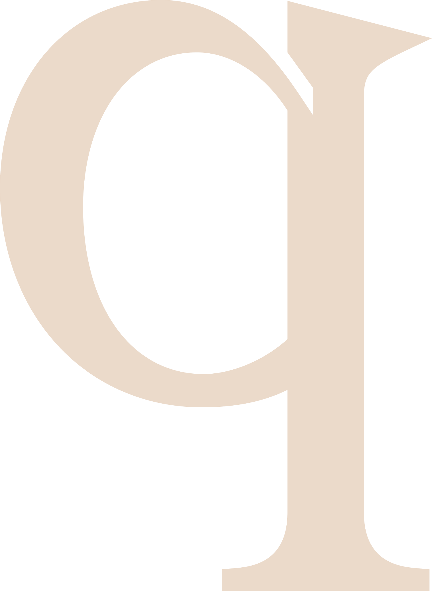
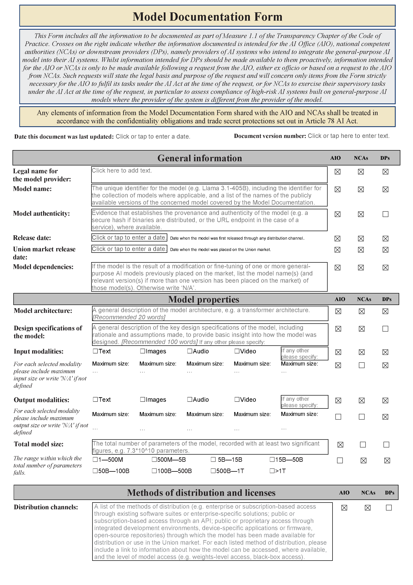
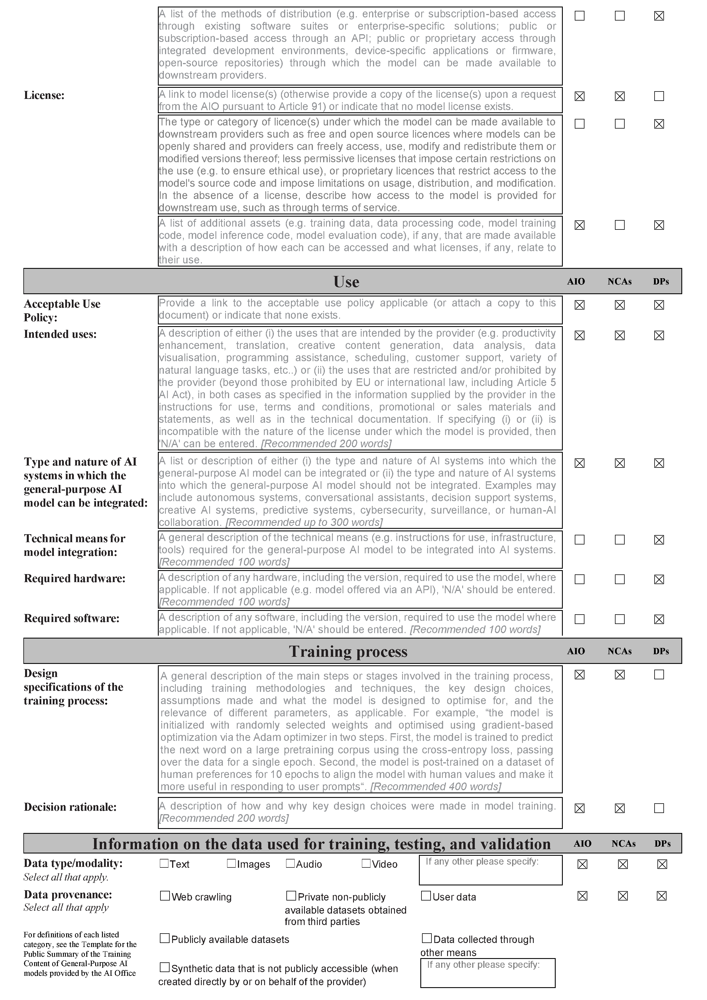
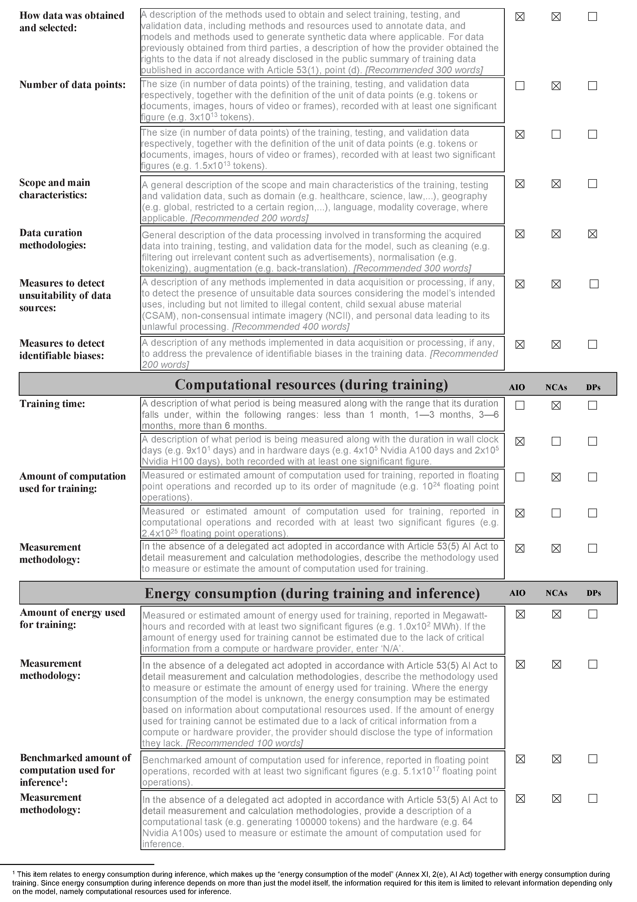
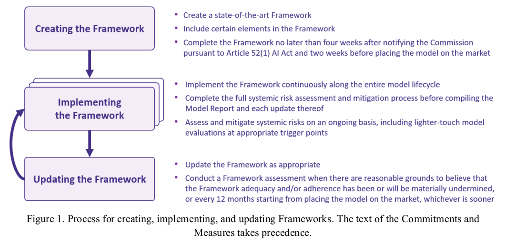
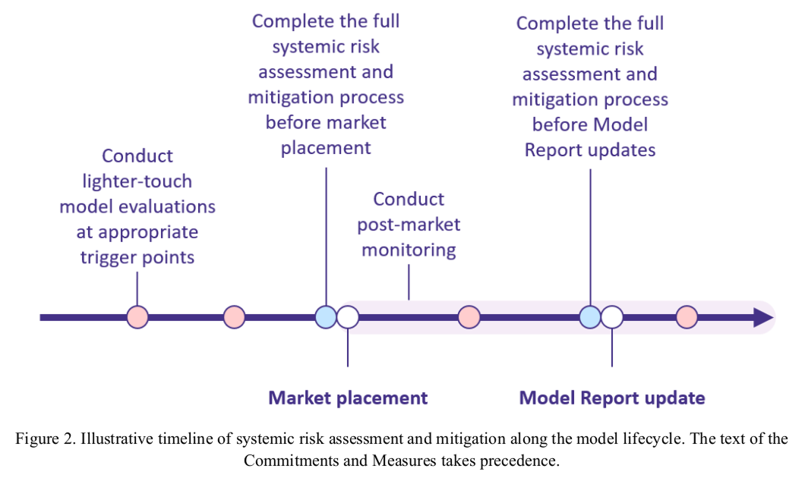
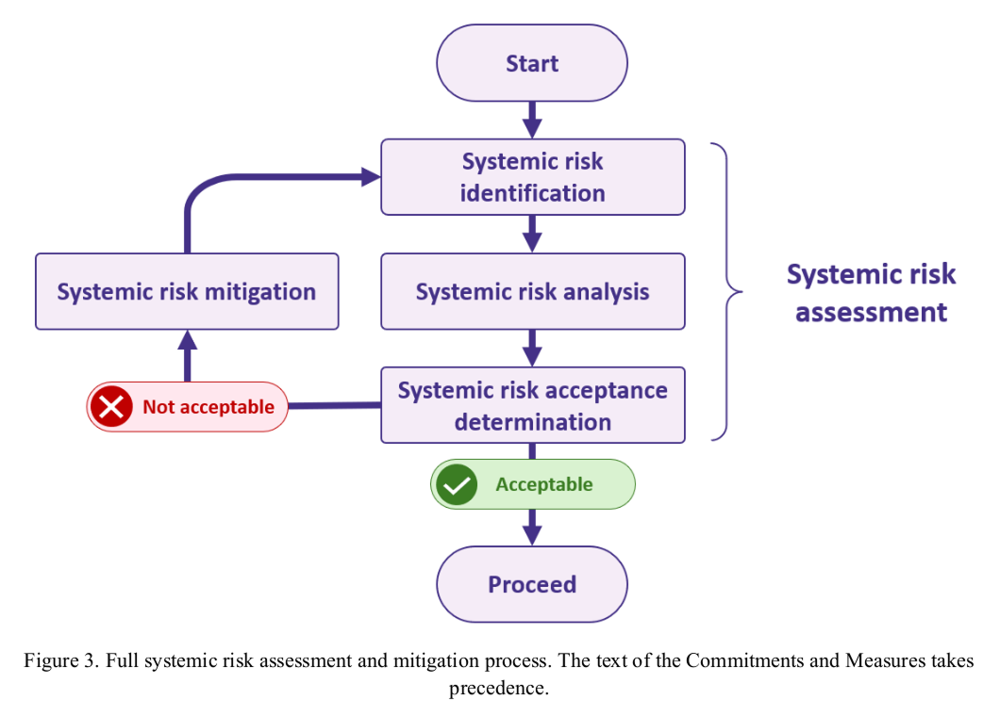
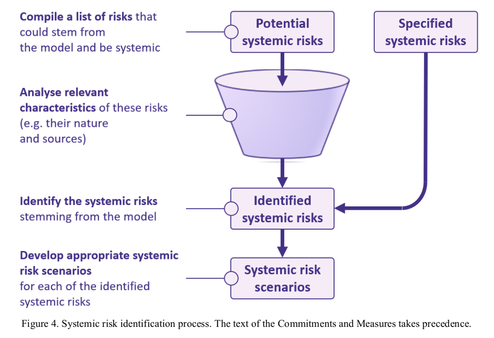

EU AI ACT: General Purpose AICodeofPractice
Final Version · 10/07/2025Disclaimer & Contributions
This website is an unofficial, best-effort service to make the Code of Practice more accessible to all observers and working group participants. It contains the full text of the final version as well as two FAQs and an Explainer on parts of the Code. The respective Chairs and Vice Chairs have written these to address questions posed by many stakeholders.
While I strive for accuracy, this is not an official legal document. Always refer to the official PDF documents provided by the AI Office for the authoritative version (and read their GPAI Q&A and CoP Q&A). Any discrepancies between this site and the official documents should be considered errors on my part.
To help me improve this site please report issues or submit pull requests on Github and feel free to reach out about anything else via email.
Thanks for your support.
Alexander Zacherl
Objectives
The overarching objective of this Code of Practice ("Code") is to improve the functioning of the internal market, to promote the uptake of human-centric and trustworthy artificial intelligence ("AI"), while ensuring a high level of protection of health, safety, and fundamental rights enshrined in the Charter, including democracy, the rule of law, and environmental protection, against harmful effects of AI in the Union, and to support innovation pursuant to Article 1(1) AI Act.
To achieve this overarching objective, the specific objectives of this Code are:
- To serve as a guiding document for demonstrating compliance with the obligations provided for in Articles 53 and 55 of the AI Act, while recognising that adherence to the Code does not constitute conclusive evidence of compliance with the obligations under the AI Act.
- To ensure providers of general-purpose AI models comply with their obligations under the AI Act and to enable the AI Office to assess compliance of providers of general-purpose AI models who choose to rely on the Code to demonstrate compliance with their obligations under the AI Act.
Commitments by Providers of General-Purpose AI Models
Transparency Chapter
Commitment 1 Documentation
In order to fulfil the obligations in Article 53(1), points (a) and (b), AI Act, Signatories commit to drawing up and keeping up-to-date model documentation in accordance with Measure 1.1, providing relevant information to providers of AI systems who intend to integrate the general-purpose AI model into their AI systems ('downstream providers' hereafter), and to the AI Office upon request (possibly on behalf of national competent authorities upon request to the AI Office when this is strictly necessary for the exercise of their supervisory tasks under the AI Act, in particular to assess the compliance of a high-risk AI system built on a general-purpose AI model where the provider of the system is different from the provider of the model), in accordance with Measure 1.2, and ensuring quality, security, and integrity of the documented information in accordance with Measure 1.3. In accordance with Article 53(2) AI Act, these Measures do not apply to providers of general-purpose AI models released under a free and open-source license that satisfy the conditions specified in that provision, unless the model is a general-purpose AI model with systemic risk.
Copyright Chapter
Commitment 1 Copyright policy
In order to demonstrate compliance with their obligation pursuant to Article 53(1), point (c) of the AI Act to put in place a policy to comply with Union law on copyright and related rights, and in particular to identify and comply with, including through state-of-the-art technologies, a reservation of rights expressed pursuant to Article 4(3) of Directive (EU) 2019/790, Signatories commit to drawing up, keeping up-to-date and implementing such a copyright policy. The Measures below do not affect compliance with Union law on copyright and related rights. They set out commitments by which the Signatories can demonstrate compliance with the obligation to put in place a copyright policy for their general-purpose AI models they place on the Union market.
Commitments by Providers of General-Purpose AI Models with Systemic Risk
Safety and Security Chapter
Commitment 1 Safety and Security Framework
Signatories commit to adopting a state-of-the-art Safety and Security Framework ("Framework"). The purpose of the Framework is to outline the systemic risk management processes and measures that Signatories implement to ensure the systemic risks stemming from their models are acceptable.
Signatories commit to a Framework adoption process that involves three steps:
- creating the Framework (as specified in Measure 1.1);
- implementing the Framework (as specified in Measure 1.2); and
- updating the Framework (as specified in Measure 1.3).
Further, Signatories commit to notifying the AI Office of their Framework (as specified in Measure Measure 1.4).
Commitment 2 Systemic risk identification
Signatories commit to identifying the systemic risks stemming from the model. The purpose of systemic risk identification includes facilitating systemic risk analysis (pursuant to Commitment 3) and systemic risk acceptance determination (pursuant to Commitment 4).
Systemic risk identification involves two elements:
- following a structured process to identify the systemic risks stemming from the model (as specified in Measure 2.1); and
- developing systemic risk scenarios for each identified systemic risk (as specified in Measure 2.2).
Commitment 3 Systemic risk analysis
Signatories commit to analysing each identified systemic risk (pursuant to Commitment 2). The purpose of systemic risk analysis includes facilitating systemic risk acceptance determination (pursuant to Commitment 4).
Systemic risk analysis involves five elements for each identified systemic risk, which may overlap and may need to be implemented recursively:
- gathering model-independent information (as specified in Measure 3.1);
- conducting model evaluations (as specified in Measure 3.2);
- modelling the systemic risk (as specified in Measure 3.3);
- estimating the systemic risk (as specified in Measure 3.4); while
- conducting post-market monitoring (as specified in Measure 3.5).
Commitment 4 Systemic risk acceptance determination
Signatories commit to specifying systemic risk acceptance criteria and determining whether the systemic risks stemming from the model are acceptable (as specified in Measure 4.1). Signatories commit to deciding whether or not to proceed with the development, the making available on the market, and/or the use of the model based on the systemic risk acceptance determination (as specified in Measure 4.2).
Commitment 5 Safety mitigations
Signatories commit to implementing appropriate safety mitigations along the entire model lifecycle, as specified in the Measure for this Commitment, to ensure the systemic risks stemming from the model are acceptable (pursuant to Commitment 4).
Commitment 6 Security mitigations
Signatories commit to implementing an adequate level of cybersecurity protection for their models and their physical infrastructure along the entire model lifecycle, as specified in the Measures for this Commitment, to ensure the systemic risks stemming from their models that could arise from unauthorised releases, unauthorised access, and/or model theft are acceptable (pursuant to Commitment 4).
A model is exempt from this Commitment if the model's capabilities are inferior to the capabilities of at least one model for which the parameters are publicly available for download.
Signatories will implement these security mitigations for a model until its parameters are made publicly available for download or securely deleted.
Commitment 7 Safety and Security Model Reports
Signatories commit to reporting to the AI Office information about their model and their systemic risk assessment and mitigation processes and measures by creating a Safety and Security Model Report ("Model Report") before placing a model on the market (as specified in Measures 7.1 to 7.5). Further, Signatories commit to keeping the Model Report up-to-date (as specified in Measure 7.6) and notifying the AI Office of their Model Report (as specified in Measure 7.7).
If Signatories have already provided relevant information to the AI Office in other reports and/or notifications, they may reference those reports and/or notifications in their Model Report. Signatories may create a single Model Report for several models if the systemic risk assessment and mitigation processes and measures for one model cannot be understood without reference to the other model(s).
Signatories that are SMEs or SMCs may reduce the level of detail in their Model Report to the extent necessary to reflect size and capacity constraints.
Commitment 8 Systemic risk responsibility allocation
Signatories commit to: (1) defining clear responsibilities for managing the systemic risks stemming from their models across all levels of the organisation (as specified in Measure 8.1); (2) allocating appropriate resources to actors who have been assigned responsibilities for managing systemic risk (as specified in Measure 8.2); and (3) promoting a healthy risk culture (as specified in Measure 8.3).
Commitment 9 Serious incident reporting
Signatories commit to implementing appropriate processes and measures for keeping track of, documenting, and reporting to the AI Office and, as applicable, to national competent authorities, without undue delay relevant information about serious incidents along the entire model lifecycle and possible corrective measures to address them, as specified in the Measures of this Commitment. Further, Signatories commit to providing resourcing of such processes and measures appropriate for the severity of the serious incident and the degree of involvement of their model.
Commitment 10 Additional documentation
Signatories commit to documenting the implementation of this Chapter (as specified in Measure 10.1) and publish summarised versions of their Framework and Model Reports as necessary (as specified in Measure 10.2).
The foregoing Commitments are supplemented by Measures found in the relevant Transparency, Copyright or Safety and Security chapters in the separate accompanying documents. [Note: On this site shown as seperate sub-pages.]
Working Group 1, Transparency
Nuria Oliver (Chair) &
Rishi Bommasani (Vice-Chair)
Introductory note
The Transparency section of the Code of Practice describes three Measures which Signatories commit to implementing to comply with their transparency obligations under Article 53(1), points (a) and (b), and the corresponding Annexes XI and XII of the AI Act. To facilitate compliance and fulfilment of the commitments contained in Measure 1.1, we include a user-friendly Model Documentation Form which allows Signatories to easily compile the information required by the aforementioned provisions of the AI Act in a single place.
The Model Documentation Form indicates for each item whether the information is intended for downstream providers, the AI Office or national competent authorities. Information intended for the AI Office or national competent authorities is only to be made available following a request from the AI Office, either ex officio or based on a request to the AI Office from national competent authorities. Such requests will state the legal basis and purpose of the request and will concern only items from the Form that are strictly necessary for the AI Office to fulfil its tasks under the AI Act at the time of the request, or for national competent authorities to exercise their supervisory tasks under the AI Act at the time of the request, in particular to assess compliance of providers high-risk AI systems built on general-purpose AI models where the provider of the system is different from the provider of the model.
In accordance with Article 78 AI Act, the recipients of any of the information contained in the Model Documentation Form are obliged to respect the confidentiality of the information obtained, in particular intellectual property rights and confidential business information or trade secrets, and to put in place adequate and effective cybersecurity measures to protect the security and confidentiality of the information obtained.
Recitals
Whereas:
- The Signatories recognise the particular role and responsibility of providers of general-purpose AI models along the AI value chain, as the models they provide may form the basis for a range of downstream AI systems, often provided by downstream providers that need a good understanding of the models and their capabilities, both to enable the integration of such models into their products and to fulfil their obligations under the AI Act (see recital 101 AI Act).
- The Signatories recognise that in the case of a fine-tuning or other modification of a general-purpose AI model, where the natural or legal person, public authority, agency or other body that modifies the model becomes the provider of the modified model subject to the obligations for providers of general purpose AI models, their Commitments under the Transparency Chapter of the Code should be limited to that modification or fine-tuning, to comply with the principle of proportionality (see recital 109 AI Act). In this context, Signatories should take into account relevant guidelines by the European Commission.
- The Signatories recognise that, without exceeding the Commitments under the Transparency Chapter of this Code, when providing information to the AI Office or to downstream providers they may need to take into account market and technological developments, so that the information continues to serve its purpose of allowing the AI Office and national competent authorities to fulfil their tasks under the AI Act, and downstream providers to integrate the Signatories' models into AI systems and to comply with their obligations under the AI Act (see Article 56(2), point (a), AI Act).
This Chapter of the Code focuses on the documentation obligations from Article 53(1), points (a) and (b), AI Act that are applicable to all providers of general-purpose AI models (without prejudice to the exception laid down in Article 53(2) AI Act), namely those concerning Annex XI, Section 1, and Annex XII AI Act. The documentation obligations concerning Annex XI, Section 2, AI Act, applicable only to providers of general-purpose AI models with systemic risk are covered by Measure 10.1 of the Safety and Security Chapter of this Code.
Commitment 1 Documentation
LEGAL TEXT
Articles 53(1)(a), 53(1)(b), 53(2), 53(7), and Annexes XI and XII AI Act
In order to fulfil the obligations in Article 53(1), points (a) and (b), AI Act, Signatories commit to drawing up and keeping up-to-date model documentation in accordance with Measure 1.1, providing relevant information to providers of AI systems who intend to integrate the general-purpose AI model into their AI systems ("downstream providers" hereafter), and to the AI Office upon request (possibly on behalf of national competent authorities upon request to the AI Office when this is strictly necessary for the exercise of their supervisory tasks under the AI Act, in particular to assess the compliance of a high-risk AI system built on a general-purpose AI model where the provider of the system is different from the provider of the model1), in accordance with Measure 1.2, and ensuring quality, security, and integrity of the documented information in accordance with Measure 1.3. In accordance with Article 53(2) AI Act, these Measures do not apply to providers of general-purpose AI models released under a free and open-source license that satisfy the conditions specified in that provision, unless the model is a general-purpose AI model with systemic risk.
Measure 1.1 Drawing up and keeping up-to-date model documentation
Signatories, when placing a general-purpose AI model on the market, will have documented at least all the information referred to in the Model Documentation Form below (hereafter this information is referred to as the "Model Documentation"). Signatories may choose to complete the Model Documentation Form provided in the Appendix to comply with this commitment.
Signatories will update the Model Documentation to reflect relevant changes in the information contained in the Model Documentation, including in relation to updated versions of the same model, while keeping previous versions of the Model Documentation for a period ending 10 years after the model has been placed on the market.
Measure 1.2 Providing relevant information
Signatories, when placing a general-purpose AI model on the market, will publicly disclose via their website, or via other appropriate means if they do not have a website, contact information for the AI Office and downstream providers to request access to the relevant information contained in the Model Documentation, or other necessary information.
Signatories will provide, upon a request from the AI Office pursuant to Articles 91 or 75(3) AI Act for one or more elements of the Model Documentation, or any additional information, that are necessary for the AI Office to fulfil its tasks under the AI Act or for national competent authorities to exercise their supervisory tasks under the AI Act, in particular to assess compliance of high-risk AI systems built on general-purpose AI models where the provider of the system is different from the provider of the model,2 the requested information in its most up-to-date form, within the period specified in the AI Office's request in accordance with Article 91(4) AI Act.
Signatories will provide to downstream providers the information contained in the most up-to-date Model Documentation that is intended for downstream providers, subject to the confidentiality safeguards and conditions provided for under Articles 53(7) and 78 AI Act. Furthermore, without prejudice to the need to observe and protect intellectual property rights and confidential business information or trade secrets in accordance with Union and national law, Signatories will provide additional information upon a request from downstream providers insofar as such information is necessary to enable them to have a good understanding of the capabilities and limitations of the general-purpose AI model relevant for its integration into the downstream providers' AI system and to enable those downstream providers to comply with their obligations pursuant to the AI Act. Signatories will provide such information within a reasonable timeframe, and no later than 14 days of receiving the request save for exceptional circumstances.
Signatories are encouraged to consider whether the documented information can be disclosed, in whole or in part, to the public to promote public transparency. Some of this information may also be required in a summarised form as part of the training content summary that providers must make publicly available under Article 53(1), point (d), AI Act, according to a template to be provided by the AI Office.
Measure 1.3 Ensuring quality, integrity, and security of information
Signatories will ensure that the documented information is controlled for quality and integrity, retained as evidence of compliance with obligations in the AI Act, and protected from unintended alterations. In the context of drawing-up, updating, and controlling the quality and security of the information and records, Signatories are encouraged to follow the established protocols and technical standards.
1 See Article 75(1) and (3) AI Act and Article 88(2) AI Act.
2 See Article 75(1) and (3) and Article 88(2) AI Act
Model Documentation Form
Below is a static, non-editable version of the Model Documentation Form. In this version, the input fields cannot be filled in. An interactive and fillable version of this form is separately available.



Working Group 1, Copyright
Alexander Peukert
(Co-Chair) & Céline Castets-Renard (Vice-Chair)
Recitals
Whereas:
- This Chapter aims to contribute to the proper application of the obligation laid down in Article 53(1), point (c), of the AI Act pursuant to which providers that place general-purpose AI models on the Union market must put in place a policy to comply with Union law on copyright and related rights, and in particular to identify and comply with, including through state-of-the-art technologies, a reservation of rights expressed by rightsholders pursuant to Article 4(3) of Directive (EU) 2019/790. While Signatories will implement the Measures set out in this Chapter in order to demonstrate compliance with Article 53(1), point (c), of the AI Act, adherence to the Code does not constitute compliance with Union law on copyright and related rights.
- This Chapter in no way affects the application and enforcement of Union law on copyright and related right which is for the courts of Member States and ultimately the Court of Justice of the European Union to interpret.
- The Signatories hereby acknowledge that Union law on copyright and related rights:
- is provided for in directives addressed to Member States and that for present purposes Directive 2001/29/EC, Directive (EU) 2019/790 and Directive 2004/48/EC are the most relevant;
- provides for exclusive rights that are preventive in nature and thus is based on prior consent save where an exception or limitation applies;
- provides for an exception or limitation for text and data mining in Article 4(1) of Directive (EU) 2019/790 which shall apply on conditions of lawful access and that the use of works and other subject matter referred to in that paragraph has not been expressly reserved by their rightsholders in an appropriate manner pursuant to Article 4(3) of Directive (EU) 2019/790.
- The commitments in this Chapter that require proportionate measures should be commensurate and proportionate to the size of providers, taking due account of the interests of SMEs, including startups.
- This Chapter does not affect agreements between the Signatories and rightsholders authorising the use of works and other protected subject matter.
- The commitments in this Chapter to demonstrate compliance with the obligation under Article 53(1), point (c), of the AI Act are complementary to the obligation of providers under Article 53(1), point (d), of the AI Act to draw up and make publicly available sufficiently detailed summaries about the content used by the Signatories for the training of their general-purpose AI models, according to a template to be provided by the AI Office.
Commitment 1 Copyright policy
LEGAL TEXT
Article 53(1)(c) AI Act
(1) In order to demonstrate compliance with their obligation pursuant to Article 53(1), point (c) of the AI Act to put in place a policy to comply with Union law on copyright and related rights, and in particular to identify and comply with, including through state-of-the-art technologies, a reservation of rights expressed pursuant to Article 4(3) of Directive (EU) 2019/790, Signatories commit to drawing up, keeping up-to-date and implementing such a copyright policy. The Measures below do not affect compliance with Union law on copyright and related rights. They set out commitments by which the Signatories can demonstrate compliance with the obligation to put in place a copyright policy for their general-purpose AI models they place on the Union market.
(2) In addition, the Signatories remain responsible for verifying that the Measures included in their copyright policy as outlined below comply with Member States' implementation of Union law on copyright and related rights, in particular but not only Article 4(3) of Directive (EU) 2019/790, before carrying out any copyright-relevant act in the territory of the relevant Member State as failure to do so may give rise to liability under Union law on copyright and related rights.
Measure 1.1 Draw up, keep up-to-date and implement a copyright policy
(1) Signatories will draw up, keep up-to-date and implement a policy to comply with Union law on copyright and related rights for all general-purpose AI models they place on the Union market. Signatories commit to describe that policy in a single document incorporating the Measures set out in this Chapter. Signatories will assign responsibilities within their organisation for the implementation and overseeing of this policy.
(2) Signatories are encouraged to make publicly available and keep up-to-date a summary of their copyright policy.
Measure 1.2 Reproduce and extract only lawfully accessible copyright-protected content when crawling the World Wide Web
(1) In order to help ensure that Signatories only reproduce and extract lawfully accessible works and other protected subject matter if they use web-crawlers or have such web-crawlers used on their behalf to scrape or otherwise compile data for the purpose of text and data mining as defined in Article 2(2) of Directive (EU) 2019/790 and the training of their general-purpose AI models, Signatories commit:
- not to circumvent effective technological measures as defined in Article 6(3) of Directive 2001/29/EC that are designed to prevent or restrict unauthorised acts in respect of works and other protected subject matter, in particular by respecting any technological denial or restriction of access imposed by subscription models or paywalls, and
- to exclude from their web-crawling websites that make available to the public content and which are, at the time of web-crawling, recognised as persistently and repeatedly infringing copyright and related rights on a commercial scale by courts or public authorities in the European Union and the European Economic Area. For the purpose of compliance with this measure, a dynamic list of hyperlinks to lists of these websites issued by the relevant bodies in the European Union and the European Economic Area will be made publicly available on an EU website.
Measure 1.3 Identify and comply with rights reservations when crawling the World Wide Web
(1) In order to help ensure that Signatories will identify and comply with, including through state-of-the-art technologies, machine-readable reservations of rights expressed pursuant to Article 4(3) of Directive (EU) 2019/790 if they use web-crawlers or have such web-crawlers used on their behalf to scrape or otherwise compile data for the purpose of text and data mining as defined in Article 2(2) of Directive (EU) 2019/790 and the training of their general-purpose AI models, Signatories commit:
- to employ web-crawlers that read and follow instructions expressed in accordance with the Robot Exclusion Protocol (robots.txt), as specified in the Internet Engineering Task Force (IETF) Request for Comments No. 9309, and any subsequent version of this Protocol for which the IETF demonstrates that it is technically feasible and implementable by AI providers and content providers, including rightsholders, and
- to identify and comply with other appropriate machine-readable protocols to express rights reservations pursuant to Article 4(3) of Directive (EU) 2019/790, for example through asset-based or location-based metadata, that have either have been adopted by international or European standardisation organisations, or are state-of-the-art, including technically implementable, and widely adopted by rightsholders, considering different cultural sectors, and generally agreed through an inclusive process based on bona fide discussions to be facilitated at EU level with the involvement of rightsholders, AI providers and other relevant stakeholders as a more immediate solution, while anticipating the development of cross-industry standards.
(2) This commitment does not affect the right of rightsholders to expressly reserve the use of works and other protected subject matter for the purposes of text and data mining pursuant to Article 4(3) of Directive (EU) 2019/790 in any appropriate manner, such as machine-readable means in the case of content made publicly available online or by other means.
Furthermore, this commitment does not affect the application of Union law on copyright and related rights to protected content scraped or crawled from the internet by third parties and used by Signatories for the purpose of text and data mining and the training of their general-purpose AI models, in particular with regard to rights reservations expressed pursuant to Article 4(3) of Directive (EU) 2019/790.
(3) Signatories are encouraged to support the processes referred to in the first paragraph, points (a) and (b), of this Measure and engage on a voluntary basis in bona fide discussions with rightsholders and other relevant stakeholders, with the aim to develop appropriate machine-readable standards and protocols to express a rights reservation pursuant to Article 4(3) of Directive (EU) 2019/790.
(4) Signatories commit to take appropriate measures to enable affected rightsholders to obtain information about the web crawlers employed, their robots.txt features and other measures that a Signatory adopts to identify and comply with rights reservations expressed pursuant to Article 4(3) of Directive (EU) 2019/790 at the time of crawling by making public such information and by providing a means for affected rightsholders to be automatically notified when such information is updated (such as by syndicating a web feed) without prejudice to the right of information provided for in Article 8 of Directive 2004/48/EC.
(5) Signatories that also provide an online search engine as defined in Article 3, point (j), of Regulation (EU) 2022/2065 or control such a provider are encouraged to take appropriate measures to ensure that their compliance with a rights reservation in the context of text and data mining activities and the training of general-purpose AI models referred to in the first paragraph of this Measure does not directly lead to adverse effects on the indexing of the content, domain(s) and/or URL(s), for which a rights reservation has been expressed, in their search engine.
Measure 1.4 Mitigate the risk of copyright-infringing outputs
(1) In order to mitigate the risk that a downstream AI system, into which a general-purpose AI model is integrated, generates output that may infringe rights in works or other subject matter protected by Union law on copyright or related rights, Signatories commit:
- to implement appropriate and proportionate technical safeguards to prevent their models from generating outputs that reproduce training content protected by Union law on copyright and related rights in an infringing manner, and
- to prohibit copyright-infringing uses of a model in their acceptable use policy, terms and conditions, or other equivalent documents, or in case of general-purpose AI models released under free and open source licenses to alert users to the prohibition of copyright infringing uses of the model in the documentation accompanying the model without prejudice to the free and open source nature of the license.
(2) This Measure applies irrespective of whether a Signatory vertically integrates the model into its own AI system(s) or whether the model is provided to another entity based on contractual relations.
Measure 1.5 Designate a point of contact and enable the lodging of complaints
(1) Signatories commit to designate a point of contact for electronic communication with affected rightsholders and provide easily accessible information about it.
(2) Signatories commit to put a mechanism in place to allow affected rightsholders and their authorised representatives, including collective management organisations, to submit, by electronic means, sufficiently precise and adequately substantiated complaints concerning the non-compliance of Signatories with their commitments pursuant to this Chapter and provide easily accessible information about it. Signatories will act on complaints in a diligent, non-arbitrary manner and within a reasonable time, unless a complaint is manifestly unfounded or the Signatory has already responded to an identical complaint by the same rightsholder. This commitment does not affect the measures, remedies and sanctions available to enforce copyright and related rights under Union and national law.
Working Group 2
Matthias Samwald (Chair), Marta Ziosi
& Alexander Zacherl (Vice-Chairs)
Working Group 3
Yoshua Bengio (Chair), Daniel
Privitera & Nitarshan Rajkumar (Vice-Chairs)
Working Group 4
Marietje Schaake (Chair), Anka Reuel
& Markus Anderljung (Vice-Chairs)
Statement from the Chairs and Vice-Chairs
Nine months ago, the European Commission appointed us – independent AI experts with experience in industry, academia, and policymaking – as Chairs and Vice-Chairs to lead the drafting of the Safety & Security Chapter of the Code of Practice.
The Code is a voluntary tool for General-Purpose AI (GPAI) providers to comply with AI Act obligations. The Safety and Security Chapter of the Code specifies a way of complying with one subset of the AI Act's GPAI obligations: the obligations for "GPAI with Systemic Risk" (GPAISR). These are obligations that apply to the providers of the most advanced models on the EU market, such as OpenAI's o3, Anthropic's Claude 4 Opus, and Google's Gemini 2.5 Pro. Like the rest of the Code, the Safety and Security Chapter is the product of several rounds of drafting incorporating feedback from providers, civil society, and independent experts. It has required making difficult trade-offs and dealing with challenging legal constraints. But overall, we believe the Safety and Security Chapter is the best framework of its kind in the world and can be a starting point for global standards for the safe and secure development and deployment of frontier AI.
Today, the Commission is publishing the final version of the Code. But the Code is only a part of a wider regulatory regime. For the EU's regulatory regime for GPAISRs to be a success, there are multiple steps the Commission needs to take. We outline our view of what those are below.
Regular reviewing & updating: Together with the publication of the Code, the Commission should present an updating mechanism for the Safety & Security Chapter (and ideally for the Code as a whole). As we recommended previously, this mechanism should include reviews and updates on a regular cadence, such as every 2 years, to increase predictability for providers. The review should include input from relevant stakeholders including independent experts, but would not necessarily have to be as in-depth as the one over the past 9 months. It should also allow, but only in very rare and exceptional cases, for emergency updates that could become effective immediately. Finally, the AI Office should, on an ongoing basis, complement the Code by providing guidance on how to comply in light of new developments.
Clear scope of Systemic Risk obligations: As we have clearly and repeatedly stated both publicly and directly to the AI Office, we have been drafting the Safety & Security Chapter of the Code assuming only about 5-15 providers will be subject to the systemic risk obligations under the AI Act. This is because the core component of the AI Act's definition of systemic risk is about the risk being specific to capabilities that match or exceed the capabilities of the most advanced general-purpose AI models. The Act set a training compute threshold – 10^25 floating point operations (FLOP) – above which a model is presumed to be a GPAISR. While this threshold may have been appropriate when the Act passed, when it applied to a handful of models, it may soon fail to capture only the most advanced models, with estimates suggesting that there will be hundreds of such models within a few years. The Commission has several tools at its disposal to address the issue; it needs to use them. These tools include updating the systemic risk threshold; establishing a rapid and reliable mechanism for model providers to contest the systemic risk presumption for a model exceeding the 10^25 FLOP threshold; exploring thresholds based on factors other than computational power including capability-related considerations; and issuing enforcement priorities that clearly state the Commission's interpretation of GPAISR obligations as only applying to risks that are specific to the frontier of capabilities.
Complementary EU legal frameworks: Despite the GPAISR obligations in the AI Act, some legal gaps remain that would need to be filled to ensure effective oversight for addressing systemic risk from frontier AI. One such example is appropriate whistleblower protections. Given the limitations of current legal protections, we recommend that the AI Office establishes a dedicated reporting channel for AI-related whistleblower disclosures. This channel should afford equal rights to whistleblowers as member state external reporting channels (such as response timelines, public disclosure options, and clarity around trade secret disclosures), enabling anonymous communication and promoting awareness of the channel's availability.
Dramatically increase funding and staffing: The AI Office has achieved initial staffing successes in hiring highly skilled and motivated technical talent. However, many more of such exceptionally qualified staff will be needed for GPAI regulation in Europe, including GPAISR obligations, to be a success. This is both about quantity and about quality. On quantity, we share the view recently put forward by a group of AI experts that the AI Safety unit (DG CNECT A3) should be scaled up to 100 staff, with the full implementation team of the AI Act expanding to 200. On quality, the Commission urgently needs to prioritize changing its procedures and rules for recruiting world-leading technical talent. The United Kingdom's AI Security Institute (AISI) – which does not even have regulation to enforce – showed how this can be done. With an in-house, head-hunting team that proactively approaches leading talent (including through in-person trips to California), significantly higher-than-usual government pay for technical talent, and a dramatically sped-up recruitment process, UK AISI has been able to recruit world-leading technical experts from places like OpenAI, Anthropic, and Google DeepMind. If the EU wants to lead in both GPAI innovation and regulation, it has to accept that the market for world-class talent interested in working in government is extremely tight and a business-as-usual approach to recruiting will lead to much of that global talent to join places like the UK AISI rather than the AI Office.
A technical foresight unit: We are also worried that the AI Office, and the Commission more broadly, seem to lack capacity to scan trends at the frontier of AI development to inform its own enforcement and AI ecosystem activities. We have witnessed during our time as Chairs that the AI Office employs exceptional staff. But they are not many, and the expectations and incentives they face in the Office are such that they constantly have to meet urgent deadlines. This means that it is nobody's job to scan what is happening at the frontier of AI development and think about what this means for the Office's work. The AI Office should therefore install a foresight unit staffed with exceptional talent with a strong track record of technical work on frontier AI.
Increased international engagement: Through providers complying with the AI Act's GPAISR obligations, the AI Office will receive unique information about their risk management procedures and results. With these unique insights, the AI Office should engage much more actively in international fora. Governing powerful AI is a global challenge, and the AI Office should seek close collaboration with other jurisdictions while respecting trade secrets and being mindful of security risks.
AI is likely the defining technology of our time. Europe cannot afford to get this wrong. We hope that the Commission steps up to this challenge. The points above would be the necessary starting point for Europe to have a chance of leading the way to getting AI right.
– The Chairs and Vice Chairs responsible for the Safety & Security Chapter of the Code of Practice –
Recitals
Whereas:
- Principle of Appropriate Lifecycle Management. The Signatories recognise that providers of general-purpose AI models with systemic risk should continuously assess and mitigate systemic risks, taking appropriate measures along the entire model lifecycle (including during development that occurs before and after a model has been placed on the market), cooperating with and taking into account relevant actors along the AI value chain (such as stakeholders likely to be affected by the model), and ensuring their systemic risk management is made future-proof by regular updates in response to improving and emerging model capabilities (see recitals 114 and 115 AI Act). Accordingly, the Signatories recognise that implementing appropriate measures will often require Signatories to adopt at least the state of the art, unless systemic risk can be conclusively ruled out with a less advanced process, measure, methodology, method, or technique. Systemic risk assessment is a multi-step process and model evaluations, referring to a range of methods used in assessing systemic risks of models, are integral along the entire model lifecycle. When systemic risk mitigations are implemented, the Signatories recognise the importance of continuously assessing their effectiveness.
- Principle of Contextual Risk Assessment and Mitigation. The Signatories recognise that this Safety and Security Chapter ("Chapter") is only relevant for providers of general-purpose AI models with systemic risk and not AI systems. However, the Signatories also recognise that the assessment and mitigation of systemic risks should include, as reasonably foreseeable, the system architecture, other software into which the model may be integrated, and the computing resources available at inference time because of their importance to the model's effects, for example by affecting the effectiveness of safety and security mitigations.
- Principle of Proportionality to Systemic Risks. The Signatories recognise that the assessment and mitigation of systemic risks should be proportionate to the risks (Article 56(2), point (d) AI Act). Therefore, the degree of scrutiny in systemic risk assessment and mitigation, in particular the level of detail in documentation and reporting, should be proportionate to the systemic risks at the relevant points along the entire model lifecycle. The Signatories recognise that while systemic risk assessment and mitigation is iterative and continuous, they need not duplicate assessments that are still appropriate to the systemic risks stemming from the model.
- Principle of Integration with Existing Laws. The Signatories recognise that this Chapter forms part of, and is complemented by, other Union laws. The Signatories further recognise that confidentiality (including commercial confidentiality) obligations are preserved to the extent required by Union law, and information sent to the European AI Office ("AI Office") in adherence to this Chapter will be treated pursuant to Article 78 AI Act. Additionally, the Signatories recognise that information about future developments and future business activities that they submit to the AI Office will be understood as subject to change. The Signatories further recognise that the Measure under this Chapter to promote a healthy risk culture (Measure 8.3) is without prejudice to any obligations arising from Directive (EU) 2019/1937 on the protection of whistleblowers and implementing laws of Member States in conjunction with Article 87 AI Act. The Signatories also recognise that they may be able to rely on international standards to the extent they cover the provisions of this Chapter.
- Principle of Cooperation. The Signatories recognise that systemic risk assessment and mitigation merit significant investment of time and resources. They recognise the advantages of collaborative efficiency, e.g. by sharing model evaluations methods and/or infrastructure. The Signatories further recognise the importance of cooperation with licensees, downstream modifiers, and downstream providers in systemic risk assessment and mitigation, and of engaging expert or lay representatives of civil society, academia, and other relevant stakeholders in understanding the model effects. The Signatories recognise that such cooperation may involve entering into agreements to share information relevant to systemic risk assessment and mitigation, while ensuring proportionate protection of sensitive information and compliance with applicable Union law. The Signatories further recognise the importance of cooperating with the AI Office (Article 53(3) AI Act) to foster collaboration between providers of general-purpose AI models with systemic risk, researchers, and regulatory bodies to address emerging challenges and opportunities in the AI landscape.
- Principle of Innovation in AI Safety and Security. The Signatories recognise that determining the most effective methods for understanding and ensuring the safety and security of general-purpose AI models with systemic risk remains an evolving challenge. The Signatories recognise that this Chapter should encourage providers of general-purpose AI models with systemic risk to advance the state of the art in AI safety and security and related processes and measures. The Signatories recognise that advancing the state of the art also includes developing targeted methods that specifically address risks while maintaining beneficial capabilities (e.g. mitigating biosecurity risks without unduly reducing beneficial biomedical capabilities), acknowledging that such precision demands greater technical effort and innovation than less targeted methods. The Signatories further recognise that if providers of general-purpose AI models with systemic risk can demonstrate equal or superior safety or security outcomes through alternative means that achieve greater efficiency, such innovations should be recognised as advancing the state of the art in AI safety and security and meriting consideration for wider adoption.
- Precautionary Principle. The Signatories recognise the important role of the Precautionary Principle, particularly for systemic risks for which the lack or quality of scientific data does not yet permit a complete assessment. Accordingly, the Signatories recognise that the extrapolation of current adoption rates and research and development trajectories of models should be taken into account for the identification of systemic risks.
- Small and medium enterprises ("SMEs") and small mid-cap enterprises ("SMCs"). To account for differences between providers of general-purpose AI models with systemic risk regarding their size and capacity, simplified ways of compliance for SMEs and SMCs, including startups, should be possible as proportionate. For example, SMEs and SMCs may be exempted from some reporting commitments (Article 56(5) AI Act). Signatories that are SMEs or SMCs and are exempted from reporting commitments recognise that they may nonetheless voluntarily adhere to them.
- Interpretation. The Signatories recognise that all Commitments and Measures shall be interpreted in light of the objective to assess and mitigate systemic risks. The Signatories further recognise that given the rapid pace of AI development, purposive interpretation focused on systemic risk assessment and mitigation is particularly important to ensure this Chapter remains effective, relevant, and future-proof. Additionally, any term appearing in this Chapter that is defined in the Glossary for this Chapter has the meaning set forth in that Glossary. The Signatories recognise that Appendix 1 should be interpreted, in instances of doubt, in good faith in light of: (1) the probability and severity of harm pursuant to the definition of 'risk' in Article 3(2) AI Act; and (2) the definition of 'systemic risk' in Article 3(65) AI Act. The Signatories recognise that this Chapter is to be interpreted in conjunction and in accordance with any AI Office guidance on the AI Act.
- Serious Incident Reporting. The Signatories recognise that the reporting of a serious incident is not an admission of wrongdoing. Further, they recognise that relevant information about serious incidents cannot be kept track of, documented, and reported at the model level only in retrospect after a serious incident has occurred. The information that could directly or indirectly lead up to such an event is often dispersed and may be lost, overwritten, or fragmented by the time Signatories become aware of a serious incident. This justifies the establishment of processes and measures to keep track of and document relevant information before serious incidents occur.
Commitments
Commitment 1 Safety and Security Framework
Signatories commit to adopting a state-of-the-art Safety and Security Framework ("Framework"). The purpose of the Framework is to outline the systemic risk management processes and measures that Signatories implement to ensure the systemic risks stemming from their models are acceptable.
Signatories commit to a Framework adoption process that involves three steps:
- creating the Framework (as specified in Measure 1.1);
- implementing the Framework (as specified in Measure 1.2); and
- updating the Framework (as specified in Measure 1.3).
Further, Signatories commit to notifying the AI Office of their Framework (as specified in Measure 1.4).

Measure 1.1 Creating the Framework
Signatories will create a state-of-the-art Framework, taking into account the models they are developing, making available on the market, and/or using.
The Framework will contain a high-level description of implemented and planned processes and measures for systemic risk assessment and mitigation to adhere to this Chapter.
In addition, the Framework will contain:
- a description and justification of the trigger points and their usage, at which the Signatories will conduct additional lighter-touch model evaluations along the entire model lifecycle, as specified in Measure 1.2, second paragraph, point (1)(a);
- for the Signatories' determination of whether systemic risk is considered acceptable, as
specified in Commitment 4:
- a description and justification of the systemic risk acceptance criteria, including the systemic risk tiers, and their usage as specified in Measure 4.1;
- a high-level description of what safety and security mitigations Signatories would need to implement once each systemic risk tier is reached;
- for each systemic risk that Signatories defined systemic risk tiers for as specified in Measure 4.1, estimates of timelines when Signatories reasonably foresee that they will have a model that exceeds the highest systemic risk tier already reached by any of their existing models. Such estimates: (i) may consist of time ranges or probability distributions; and (ii) may take into account aggregate forecasts, surveys, and other estimates produced with other providers. Further, such estimates will be supported by justifications, including underlying assumptions and uncertainties; and
- a description of whether and, if so, by what process input from external actors, including governments, influences proceeding with the development, making available on the market, and/or use of the Signatories' models as specified in Measure 4.2, other than as the result of independent external evaluations;
- a description of how systemic risk responsibility is allocated for the processes by which systemic risk is assessed and mitigated as specified in Commitment 8; and
- a description of the process by which Signatories will update the Framework, including how they will determine that an updated Framework is confirmed, as specified in Measure 1.3.
Signatories will have confirmed the Framework no later than four weeks after having notified the Commission pursuant to Article 52(1) AI Act and no later than two weeks before placing the model on the market.
Measure 1.2 Implementing the Framework
Signatories will implement the processes and measures outlined in their Framework as specified in the following paragraphs.
Along the entire model lifecycle, Signatories will continuously:
- assess the systemic risks stemming from the model by:
- conducting lighter-touch model evaluations that need not adhere to Appendix 3 (e.g. automated evaluations) at appropriate trigger points defined in terms of, e.g. time, training compute, development stages, user access, inference compute, and/or affordances;
- conducting post-market monitoring after placing the model on the market, as specified in Measure 3.5;
- taking into account relevant information about serious incidents (pursuant to Commitment 9); and
- increasing the breadth and/or depth of assessment or conducting a full systemic risk assessment and mitigation process that is specified in the following paragraph, based on the results of points (a), (b), and (c); and
- implement systemic risk mitigations taking into account the results of point (1), including addressing serious incidents as appropriate.

In addition, Signatories will implement a full systemic risk assessment and mitigation process that involves four steps, without needing to duplicate parts of the model's previous systemic risk assessments that are still appropriate:
- identifying the systemic risks stemming from the model as specified in Commitment 2;
- analysing each identified systemic risk as specified in Commitment 3;
- determining whether the systemic risks stemming from the model are acceptable as specified in Measure 4.1; and
- if the systemic risks stemming from the model are not determined to be acceptable, implementing safety and/or security mitigations as specified in Commitments 5 and 6, and re-assessing the systemic risks stemming from the model starting from point (1), as specified in Measure 4.2.
Signatories will conduct such a full systemic risk assessment and mitigation process at least before placing the model on the market and whenever the conditions specified in Measure 7.6, first and third paragraph, are met. Signatories will report their implemented measures and processes to the AI Office as specified in Commitment 7.

Measure 1.3 Updating the Framework
Signatories will update the Framework as appropriate, including without undue delay after a Framework assessment (specified in the following paragraphs), to ensure the information in Measure 1.1 is kept up-to-date and the Framework is at least state-of-the-art. For any update of the Framework, Signatories will include a changelog, describing how and why the Framework has been updated, along with a version number and the date of change.
Signatories will conduct an appropriate Framework assessment, if they have reasonable grounds to believe that the adequacy of their Framework and/or their adherence thereto has been or will be materially undermined, or every 12 months starting from their placing of the model on the market, whichever is sooner. Examples of such grounds are:
- how the Signatories develop models will change materially, which can be reasonably foreseen to lead to the systemic risks stemming from at least one of their models not being acceptable;
- serious incidents and/or near misses involving their models or similar models that are likely to indicate that the systemic risks stemming from at least one of their models are not acceptable have occurred; and/or
- the systemic risks stemming from at least one of their models have changed or are likely to change materially, e.g. safety and/or security mitigations have become or are likely to become materially less effective, or at least one of their models has developed or is likely to develop materially changed capabilities and/or propensities.
A Framework assessment will include the following:
- Framework adequacy: An assessment of whether the processes and measures in the Framework are appropriate for the systemic risks stemming from the Signatories' models. This assessment will take into account how the models are currently being developed, made available on the market, and/or used, and how they are expected to be developed, made available on the market, and/or used over the next 12 months.
- Framework adherence: An assessment focused on the Signatories' adherence to the Framework, including: (a) any instances of, and reasons for, non-adherence to the Framework since the last Framework assessment; and (b) any measures, including safety and security mitigations, that need to be implemented to ensure continued adherence to the Framework. If point(s) (a) and/or (b) give rise to risks of future non-adherence, Signatories will make remediation plans as part of their Framework assessment.
Measure 1.4 Framework notifications
Signatories will provide the AI Office with (unredacted) access to their Framework, and updates thereof, within five business days of either being confirmed.
Commitment 2 Systemic risk identification
LEGAL TEXT
Article 55(1) and recital 110 AI Act
Signatories commit to identifying the systemic risks stemming from the model. The purpose of systemic risk identification includes facilitating systemic risk analysis (pursuant to Commitment 3) and systemic risk acceptance determination (pursuant to Commitment 4).
Systemic risk identification involves two elements:
- following a structured process to identify the systemic risks stemming from the model (as specified in Measure 2.1); and
- developing systemic risk scenarios for each identified systemic risk (as specified in Measure 2.2).

Measure 2.1 Systemic risk identification process
Signatories will identify:
- the systemic risks obtained through the following process:
- compiling a list of risks that could stem from the model and be systemic, based on the
types of risks in Appendix 1.1, taking
into account:
- model-independent information (pursuant to Measure 3.1);
- relevant information about the model and similar models, including information from post-market monitoring (pursuant to Measure 3.5), and information about serious incidents and near misses (pursuant to Commitment 9); and
- any other relevant information communicated directly or via public releases to the Signatory by the AI Office, the Scientific Panel of Independent Experts, or other initiatives, such as the International Network of AI Safety Institutes, endorsed for this purpose by the AI Office;
- analysing relevant characteristics of the risks compiled pursuant to point (a), such as their nature (based on Appendix 1.2) and sources (based on Appendix 1.3); and
- identifying, based on point (b), the systemic risks stemming from the model; and
- compiling a list of risks that could stem from the model and be systemic, based on the
types of risks in Appendix 1.1, taking
into account:
- the specified systemic risks in Appendix 1.4.
Measure 2.2 Systemic risk scenarios
Signatories will develop appropriate systemic risk scenarios, including regarding the number and level of detail of these systemic risk scenarios, for each identified systemic risk (pursuant to Measure 2.1).
Commitment 3 Systemic risk analysis
LEGAL TEXT
Article 55(1) and recital 114 AI Act
Signatories commit to analysing each identified systemic risk (pursuant to Commitment 2). The purpose of systemic risk analysis includes facilitating systemic risk acceptance determination (pursuant to Commitment 4).
Systemic risk analysis involves five elements for each identified systemic risk, which may overlap and may need to be implemented recursively:
- gathering model-independent information (as specified in Measure 3.1);
- conducting model evaluations (as specified in Measure 3.2);
- modelling the systemic risk (as specified in Measure 3.3); and
- estimating the systemic risk (as specified in Measure 3.4); while
- conducting post-market monitoring (as specified in Measure 3.5).
Measure 3.1 Model-independent information
Signatories will gather model-independent information relevant to the systemic risk.
Signatories will search for and gather such information with varying degrees of breadth and depth appropriate for the systemic risk, using methods such as:
- web searches (e.g. making use of open-source intelligence methods in collecting and analysing information gathered from open sources);
- literature reviews;
- market analyses (e.g. focused on capabilities of other models available on the market);
- reviews of training data (e.g. for indications of data poisoning or tampering);
- reviewing and analysing historical incident data and incident databases;
- forecasting of general trends (e.g. forecasts concerning the development of algorithmic efficiency, compute use, data availability, and energy use);
- expert interviews and/or panels; and/or
- lay interviews, surveys, community consultations, or other participatory research methods investigating, e.g. the effects of models on natural persons, including vulnerable groups.
Measure 3.2 Model evaluations
Signatories will conduct at least state-of-the-art model evaluations in the modalities relevant to the systemic risk to assess the model's capabilities, propensities, affordances, and/or effects, as specified in Appendix 3.
Signatories will ensure that such model evaluations are designed and conducted using methods that are appropriate for the model and the systemic risk, and include open-ended testing of the model to improve the understanding of the systemic risk, with a view to identifying unexpected behaviours, capability boundaries, or emergent properties. Examples of model evaluation methods are: Q&A sets, task-based evaluations, benchmarks, red-teaming and other methods of adversarial testing, human uplift studies, model organisms, simulations, and/or proxy evaluations for classified materials. Further, the design of the model evaluations will be informed by the model-independent information gathered pursuant to Measure 3.1.
Measure 3.3 Systemic risk modelling
Signatories will conduct systemic risk modelling for the systemic risk. To this end, Signatories will:
- use at least state-of-the-art risk modelling methods;
- build on the systemic risk scenarios developed pursuant to Measure 2.2; and
- take into account at least the information gathered pursuant to Measure 2.1 and this Commitment.
Measure 3.4 Systemic risk estimation
Signatories will estimate the probability and severity of harm for the systemic risk.
Signatories will use at least state-of-the-art risk estimation methods and take into account at least the information gathered pursuant to Commitment 2, this Commitment, and Commitment 9. Estimates of systemic risk will be expressed as a risk score, risk matrix, probability distribution, or in other adequate formats, and may be quantitative, semi-quantitative, and/or qualitative. Examples of such estimates of systemic risks are: (1) a qualitative systemic risk score (e.g. "moderate" or "critical"); (2) a qualitative systemic risk matrix (e.g. "probability: unlikely" x "impact: high"); and/or (3) a quantitative systemic risk matrix (e.g. "X-Y%" x "X-Y EUR damage").
Measure 3.5 Post-market monitoring
Signatories will conduct appropriate post-market monitoring to gather information relevant to assessing whether the systemic risk could be determined to not be acceptable (pursuant to Measure 4.1) and to inform whether a Model Report update is necessary (pursuant to Measure 7.6). Further, Signatories will use best efforts to conduct post-market monitoring to gather information relevant to producing estimates of timelines (pursuant to Measure 1.1, point (2)(c)).
To these ends, post-market monitoring will:
- gather information about the model's capabilities, propensities, affordances, and/or effects;
- take into account the exemplary methods listed below; and
- if Signatories themselves provide and/or deploy AI systems that integrate their own model, include monitoring the model as part of these AI systems.
The following are examples of post-market monitoring methods for the purpose of point (2) above:
- collecting end-user feedback;
- providing (anonymous) reporting channels;
- providing (serious) incident reporting forms;
- providing bug bounties;
- establishing community-driven model evaluations and public leaderboards;
- conducting frequent dialogues with affected stakeholders;
- monitoring software repositories, known malware, public forums, and/or social media for patterns of use;
- supporting the scientific study of the model's capabilities, propensities, affordances, and/or effects in collaboration with academia, civil society, regulators, and/or independent researchers;
- implementing privacy-preserving logging and metadata analysis techniques of the model's inputs and outputs using, e.g. watermarks, metadata, and/or other at least state-of-the-art provenance techniques;
- collecting relevant information about breaches of the model's use restrictions and subsequent incidents arising from such breaches; and/or
- monitoring aspects of models that are relevant for assessing and mitigating systemic risk and are not transparent to third parties, e.g. hidden chains-of-thought for models for which the parameters are not publicly available for download.
To facilitate post-market monitoring, Signatories will provide an adequate number of independent external evaluators with adequate free access to:
- the model's most capable model version(s) with regard to the systemic risk that is made available on the market;
- the chains-of-thought of the model version(s) in point (1), if available; and
- the model version(s) corresponding to the model version(s) in point (1) with the fewest safety mitigations implemented with regard to the systemic risk (such as the helpful-only model version, if it exists) and, as available, its chains-of-thought;
unless the model is considered a similarly safe or safer model with regard to the same systemic risk (pursuant to Appendix 2.2). Such access to a model may be provided by Signatories through an API, on-premise access (including transport), access via Signatory-provided hardware or by making the model parameters publicly available for download, as appropriate.
For the purpose of selecting independent external evaluators for the preceding paragraph, Signatories will publish suitable criteria for assessing applications. The number of such evaluators, the selection criteria, and security measures may differ for points (1), (2), and (3) in the preceding paragraph.
Signatories will only access, store, and/or analyse evaluation results from independent external evaluators to assess and mitigate systemic risk from the model. In particular, Signatories refrain from training their models on the inputs and/or outputs from such test runs without express permission from the evaluators. Additionally, Signatories will not take any legal or technical retaliation against the independent external evaluators as a consequence of their testing and/or publication of findings as long as the evaluators:
- do not intentionally disrupt model availability through the testing, unless expressly permitted;
- do not intentionally access, modify, and/or use sensitive or confidential user data in violation of Union law, and if evaluators do access such data, collect only what is necessary, refrain from disseminating it, and delete it as soon as legally feasible;
- do not intentionally use their access for activities that pose a significant risk to public safety and security;
- do not use findings to threaten Signatories, users, or other actors in the value chain, provided that disclosure under pre-agreed policies and timelines will not be counted as such coercion; and
- adhere to the Signatory's publicly available procedure for responsible vulnerability disclosure, which will specify at least that the Signatory cannot delay or block publication for more than 30 business days from the date that the Signatory is made aware of the findings, unless a longer timeline is exceptionally necessary such as if disclosure of the findings would materially increase the systemic risk.
Signatories that are SMEs or SMCs may contact the AI Office, which may provide support or resources to facilitate adherence to this Measure.
Commitment 4 Systemic risk acceptance determination
LEGAL TEXT
Article 55(1) AI Act
Signatories commit to specifying systemic risk acceptance criteria and determining whether the systemic risks stemming from the model are acceptable (as specified in Measure 4.1). Signatories commit to deciding whether or not to proceed with the development, the making available on the market, and/or the use of the model based on the systemic risk acceptance determination (as specified in Measure 4.2).
Measure 4.1 Systemic risk acceptance criteria and acceptance determination
Signatories will describe and justify (in the Framework pursuant to Measure 1.1, point (2)(a)) how they will determine whether the systemic risks stemming from the model are acceptable. To do so, Signatories will:
- for each identified systemic risk (pursuant to Measure
2.1), at
least:
- define appropriate systemic risk tiers that:
- are defined in terms of model capabilities, and may additionally incorporate model propensities, risk estimates, and/or other suitable metrics;
- are measurable; and
- comprise at least one systemic risk tier that has not been reached by the model; or
- define other appropriate systemic risk acceptance criteria, if systemic risk tiers are not suitable for the systemic risk and the systemic risk is not a specified systemic risk (pursuant to Appendix 1.4);
- define appropriate systemic risk tiers that:
- describe how they will use these tiers and/or other criteria to determine whether each identified systemic risk (pursuant to Measure 2.1) and the overall systemic risk are acceptable; and
- justify how the use of these tiers and/or other criteria pursuant to point (2) ensures that each identified systemic risk (pursuant to Measure 2.1) and the overall systemic risk are acceptable.
Signatories will apply the systemic risk acceptance criteria to each identified systemic risk (pursuant to Measure 2.1), incorporating a safety margin (as specified in the following paragraph), to determine whether each identified systemic risk (pursuant to Measure 2.1) and the overall systemic risk are acceptable. This acceptance determination will take into account at least the information gathered via systemic risk identification and analysis (pursuant to Commitments 2 and 3).
The safety margin will:
- be appropriate for the systemic risk; and
- take into account potential limitations, changes, and uncertainties of:
- systemic risk sources (e.g. capability improvements after the time of assessment);
- systemic risk assessments (e.g. under-elicitation of model evaluations or historical accuracy of similar assessments); and
- the effectiveness of safety and security mitigations (e.g. mitigations being circumvented, deactivated, or subverted).
Measure 4.2 Proceeding or not proceeding based on systemic risk acceptance determination
Signatories will only proceed with the development, the making available on the market, and/or the use of the model, if the systemic risks stemming from the model are determined to be acceptable (pursuant to Measure 4.1).
If the systemic risks stemming from the model are not determined to be acceptable or are reasonably foreseeable to be soon not determined to be acceptable (pursuant to Measure 4.1), Signatories will take appropriate measures to ensure the systemic risks stemming from the model are and will remain acceptable prior to proceeding. In particular, Signatories will:
- not make the model available on the market, restrict the making available on the market (e.g. via adjusting licenses or usage restrictions), withdraw, or recall the model, as necessary;
- implement safety and/or security mitigations (pursuant to Commitments 5 and Commitment 6); and
- conduct another round of systemic risk identification (pursuant to Commitment 2), systemic risk analysis (pursuant to Commitment 3), and systemic risk acceptance determination (pursuant to this Commitment).
Commitment 5 Safety mitigations
LEGAL TEXT
Article 55(1) and recital 114 AI Act
Signatories commit to implementing appropriate safety mitigations along the entire model lifecycle, as specified in the Measure for this Commitment, to ensure the systemic risks stemming from the model are acceptable (pursuant to Commitment 4).
Measure 5.1 Appropriate safety mitigations
Signatories will implement safety mitigations that are appropriate, including sufficiently robust under adversarial pressure (e.g. fine-tuning attacks or jailbreaking), taking into account the model's release and distribution strategy.
Examples of safety mitigations are:
- filtering and cleaning training data, e.g. data that might result in undesirable model propensities such as unfaithful chain-of-thought traces;
- monitoring and filtering the model's inputs and/or outputs;
- changing the model behaviour in the interests of safety, such as fine-tuning the model to refuse certain requests or provide unhelpful responses;
- staging the access to the model, e.g. by limiting API access to vetted users, gradually expanding access based on post-market monitoring, and/or not making the model parameters publicly available for download initially;
- offering tools for other actors to use to mitigate the systemic risks stemming from the model;
- techniques that provide high-assurance quantitative safety guarantees concerning the model's behaviour;
- techniques to enable safe ecosystems of AI agents, such as model identifications, specialised communication protocols, or incident monitoring tools; and/or
- other emerging safety mitigations, such as for achieving transparency into chain-of-thought reasoning or defending against a model's ability to subvert its other safety mitigations.
Commitment 6 Security mitigations
LEGAL TEXT
Article 55(1), and recitals 114 and 115 AI Act
Signatories commit to implementing an adequate level of cybersecurity protection for their models and their physical infrastructure along the entire model lifecycle, as specified in the Measures for this Commitment, to ensure the systemic risks stemming from their models that could arise from unauthorised releases, unauthorised access, and/or model theft are acceptable (pursuant to Commitment 4).
A model is exempt from this Commitment if the model's capabilities are inferior to the capabilities of at least one model for which the parameters are publicly available for download.
Signatories will implement these security mitigations for a model until its parameters are made publicly available for download or securely deleted.
Measure 6.1 Security Goal
Signatories will define a goal that specifies the threat actors that their security mitigations are intended to protect against ("Security Goal"), including non-state external threats, insider threats, and other expected threat actors, taking into account at least the current and expected capabilities of their models.
Measure 6.2 Appropriate security mitigations
Signatories will implement appropriate security mitigations to meet the Security Goal, including the security mitigations pursuant to Appendix 4. If Signatories deviate from any of the security mitigations listed in Appendices 4.1 to 4.5, points (a), e.g. due to the Signatory's organisational context and digital infrastructure, they will implement alternative security mitigations that achieve the respective mitigation objectives.
The implementation of the required security mitigations may be staged appropriately in line with the increase in model capabilities along the entire model lifecycle.
Commitment 7 Safety and Security Model Reports
LEGAL TEXT
Articles 55(1) and 56(5) AI Act
Signatories commit to reporting to the AI Office information about their model and their systemic risk assessment and mitigation processes and measures by creating a Safety and Security Model Report ("Model Report") before placing a model on the market (as specified in Measures 7.1 to 7.5). Further, Signatories commit to keeping the Model Report up-to-date (as specified in Measure 7.6) and notifying the AI Office of their Model Report (as specified in Measure 7.7).
If Signatories have already provided relevant information to the AI Office in other reports and/or notifications, they may reference those reports and/or notifications in their Model Report. Signatories may create a single Model Report for several models if the systemic risk assessment and mitigation processes and measures for one model cannot be understood without reference to the other model(s).
Signatories that are SMEs or SMCs may reduce the level of detail in their Model Report to the extent necessary to reflect size and capacity constraints.
Measure 7.1 Model description and behaviour
Signatories will provide in the Model Report:
- a high-level description of the model's architecture, capabilities, propensities, and affordances, and how the model has been developed, including its training method and data, as well as how these differ from other models they have made available on the market;
- a description of how the model has been used and is expected to be used, including its use in the development, oversight, and/or evaluation of models;
- a description of the model versions that are going to be made or are currently made available on the market and/or used, including differences in systemic risk mitigations and systemic risks; and
- a specification (e.g. via valid hyperlinks) of how Signatories intend the model to operate
(often known as a "model specification"), including by:
- specifying the principles that the model is intended to follow;
- stating how the model is intended to prioritise different kinds of principles and instructions;
- listing topics on which the model is intended to refuse instructions; and
- providing the system prompt.
Measure 7.2 Reasons for proceeding
Signatories will provide in the Model Report:
- a detailed justification for why the systemic risks stemming from the model are acceptable, including details of the safety margins incorporated (pursuant to Measure 4.1);
- the reasonably foreseeable conditions under which the justification in point (1) would no longer hold; and
- a description of how the decision to proceed with the development, making available on the market, and/or use (pursuant to Measure 4.2) was made, including whether input from external actors informed such a decision (pursuant to Measure 1.1, point (2)(d)), and whether and how input from independent external evaluators (pursuant to Appendix Measure 3.5) informed such a decision.
Measure 7.3 Documentation of systemic risk identification, analysis, and mitigation
Signatories will provide in the Model Report:
- a description of the results of their systemic risk identification and analysis and any
information relevant to understanding them including:
- a description of their systemic risk identification process for risks belonging to the types of risks in Appendix 1.1 (pursuant to Measure 2.1, point (1));
- explanations of uncertainties and assumptions about how the model would be used and integrated into AI systems;
- a description of the results of their systemic risk modelling for the systemic risks (pursuant to Measure 3.3);
- a description of the systemic risks stemming from the model and a justification therefor, including: (i) the systemic risk estimates (pursuant to Measure 3.4); and (ii) a comparison between systemic risks with safety and security mitigations implemented and with the model fully elicited (pursuant to Appendix 3.2);
- all results of model evaluations relevant to understanding the systemic risks stemming from the model and descriptions of: (i) how the evaluations were conducted; (ii) the tests and tasks involved in the model evaluations; (iii) how the model evaluations were scored; (iv) how the model was elicited (pursuant to Appendix 3.2); (v) how the scores compare to human baselines (where applicable), across the model versions, and across the evaluation settings;
- at least five random sample of inputs and outputs from each relevant model evaluation, such as completions, generations, and/or trajectories, to facilitate independent interpretation of the model evaluation results and understanding of the systemic risks stemming from the model. If particular trajectories materially inform the understanding of a systemic risk, such trajectories will also be provided. Further, Signatories will provide a sufficiently large number of random samples of inputs and outputs from a relevant model evaluation if subsequently asked by the AI Office;
- a description of the access and other resources provided to: (i) internal model evaluation teams (pursuant to Appendix 3.4); and (ii) independent external evaluators (pursuant to Appendix 3.5). Alternatively to the preceding point (ii), Signatories will procure any such independent external evaluators to provide the requisite information directly to the AI Office at the same time that the Signatory supplies its Model Report to the AI Office; and
- if they make use of the "similarly safe or safer model" concept pursuant to Appendix 2, provide a justification of how the criteria for "safe reference model" (pursuant to Appendix 2.1) and the criteria for "similarly safe or safer model" (pursuant to Appendix 2.2) are fulfilled;
- a description of: (a) all safety mitigations implemented (pursuant to Commitment 5); (b) how they fulfil the requirements of Measure 5.1; and (c) their limitations (e.g. if training on examples of undesirable model behaviour makes identifying future instances of such behaviour more difficult);
- a description of: (a) the Security Goal (pursuant to Measure 6.1); (b) all security mitigations implemented (pursuant to Measure 6.2); (c) how the mitigations meet the Security Goal, including the extent to which they align with relevant international standards or other relevant guidance (such as the RAND Securing AI Model Weights report); and (d) if Signatories have deviated from a listed security mitigation in one (or more) of Appendices 4.1 to 4.5, points (a), a justification for how the alternative security mitigations they have implemented achieve the respective mitigation objectives; and
- a high-level description of: (a) the techniques and assets they intend to use to further develop the model over the next six months, including through the use of other AI models and/or AI systems; (b) how such future versions and more advanced models may differ from the Signatory's current ones, in terms of capabilities and propensities; and (c) any new or materially updated safety and security mitigations that they intend to implement for such models.
Measure 7.4 External reports
Signatories will provide in the Model Report:
- any available reports (e.g. via valid hyperlinks) from: to the extent that respects existing confidentiality (including commercial confidentiality) obligations and allows such external evaluators or parties to maintain control over the publication of their findings, without implicit endorsement by the Signatories of the content of such reports;
- if no independent external evaluator was involved in model evaluations pursuant to Appendix 3.5, a justification of how the conditions in 3.5, first paragraph, points (1) or (2) were met; and
- if at least one independent external evaluator was involved in model evaluations pursuant to Appendix 3.5, an explanation of the choice of evaluator based on the qualification criteria.
Measure 7.5 Material changes to the systemic risk landscape
Signatories will ensure that the Model Report contains information relevant for the AI Office to understand whether and how the development, making available on the market, and/or use of the model result in material changes in the systemic risk landscape that are relevant for the implementation of systemic risk assessment and mitigation measures and processes under this Chapter.
Examples of such information are:
- a description of scaling laws that suggest novel ways of improving model capabilities;
- a summary of the characteristics of novel architectures that materially improve the state of the art in computational efficiency or model capabilities;
- a description of information relevant to assessing the effectiveness of mitigations, e.g. if the model's chain-of-thought is less legible by humans; and/or
- a description of training techniques that materially improve the efficiency or feasibility of distributed training.
Measure 7.6 Model Report updates
Signatories will update their Model Report if they have reasonable grounds to believe that the justification for why the systemic risks stemming from the model are acceptable (pursuant to Measure 7.2, point (1)) has been materially undermined. Examples of such grounds are:
- one of the conditions listed pursuant to Measure 7.2, point (2), has materialised;
- the model's capabilities, propensities, and/or affordances have changed or will change materially, such as through further post-training, access to additional tools, or increase in inference compute;
- the model's use and/or integrations into AI systems have changed or will change materially;
- serious incidents and/or near misses involving the model or a similar model have occurred; and/or
- developments have occurred that materially undermine the external validity of model evaluations conducted, materially improve the state of the art of model evaluation methods, and/or for other reasons suggest that the systemic risk assessment conducted is materially inaccurate.
Model Report updates should be completed within a reasonable amount of time after the Signatory becomes aware of the grounds that necessitate an update, e.g. after discovering them as part of their continuous systemic risk assessment and mitigation (pursuant to Measure 1.2, second paragraph). If a Model Report update is triggered by a deliberate change to a model and that change is made available on the market, the Model Report update and the underlying full systemic risk assessment and mitigation process (pursuant to Measure 1.2, third paragraph) need to be completed before the change is made available on the market.
Further, if the model is amongst their respective most capable models available on the market, Signatories will provide the AI Office with an updated Model Report at least every six months. Signatories do not need to do so if: (1) the model's capabilities, propensities, and/or affordances have not changed since they have last provided the AI Office with the Model Report, or update thereof; (2) they will place a more capable model on the market in less than a month; and/or (3) the model is considered similarly safe or safer (pursuant to Appendix 2.2) for each identified systemic risk (pursuant to Measure 2.1).
The updated Model Report will contain:
- the updated information specified in Measures 7.1 to 7.5 based on the results of the full systemic risk assessment and mitigation process (pursuant to Measure 1.2, third paragraph); and
- a changelog, describing how and why the Model Report has been updated, along with a version number and the date of change.
Measure 7.7 Model Report notifications
Signatories will provide the AI Office with access to the Model Report (without redactions, unless they are required by national security laws to which Signatories are subject) by the time they place a model on the market, e.g. through a publicly accessible link or through a sufficiently secure channel specified by the AI Office. If a Model Report is updated, Signatories will provide the AI Office with access to the updated Model Report (without redactions, unless they are required by national security laws to which Signatories are subject) within five business days of a confirmed update.
To facilitate the placing on the market of a model, Signatories may delay providing the AI Office with a Model Report, or an update thereof, by up to 15 business days. This may be done only if the AI Office considers the Signatory to be acting in good faith and if the Signatory provides an interim Model Report, containing the information specified in Measures 7.2 and 7.5, to the AI Office without delay.
Commitment 8 Systemic risk responsibility allocation
LEGAL TEXT
Article 55(1) and recital 114 AI Act
Signatories commit to: (1) defining clear responsibilities for managing the systemic risks stemming from their models across all levels of the organisation (as specified in Measure 8.1); (2) allocating appropriate resources to actors who have been assigned responsibilities for managing systemic risk (as specified in Measure 8.2); and (3) promoting a healthy risk culture (as specified in Measure 8.3).
Measure 8.1 Definition of clear responsibilities
Signatories will clearly define responsibilities for managing the systemic risks stemming from their models across all levels of the organisation. This includes the following responsibilities:
- Systemic risk oversight: Overseeing the Signatories' systemic risk assessment and mitigation processes and measures.
- Systemic risk ownership: Managing systemic risks stemming from Signatories' models, including the systemic risk assessment and mitigation processes and measures, and managing the response to serious incidents.
- Systemic risk support and monitoring: Supporting and monitoring the Signatories' systemic risk assessment and mitigation processes and measures.
- Systemic risk assurance: Providing internal and, as appropriate, external assurance about the adequacy of the Signatories' systemic risk assessment and mitigation processes and measures to the management body in its supervisory function or another suitable independent body (such as a council or board).
Signatories will allocate these responsibilities, as suitable for the Signatories' governance structure and organisational complexity, across the following levels of their organisation:
- the management body in its supervisory function or another suitable independent body (such as a council or board);
- the management body in its executive function;
- relevant operational teams;
- if available, internal assurance providers (e.g. an internal audit function); and
- if available, external assurance providers (e.g. third-party auditors).
This Measure is presumed to be fulfilled, if Signatories, as appropriate for the systemic risks stemming from their models, adhere to all of the following:
- Systemic risk oversight: The responsibility for overseeing the Signatory's systemic risk management processes and measures has been assigned to a specific committee of the management body in its supervisory function (e.g. a risk committee or audit committee) or one or multiple suitable independent bodies (such as councils or boards). For Signatories that are SMEs or SMCs, this responsibility may be primarily assigned to an individual member of the management body in its supervisory function.
- Systemic risk ownership: The responsibility for managing systemic risks from models has been assigned to suitable members of the management body in its executive function who are also responsible for relevant Signatory core business activities that may give rise to systemic risk, such as research and product development (e.g. Head of Research or Head of Product). The members of the management body in its executive function have assigned lower-level responsibilities to operational managers who oversee parts of the systemic-risk-producing business activities (e.g. specific research domains or specific products). Depending on the organisational complexity, there may be a cascading responsibility structure.
- Systemic risk support and monitoring: The responsibility for supporting and monitoring the Signatory's systemic risk management processes and measures, including conducting risk assessments, has been assigned to at least one member of the management body in its executive function (e.g. a Chief Risk Officer or a Vice President, Safety & Security Framework). This member(s) must not also be responsible for the Signatory's core business activities that may produce systemic risk (e.g. research and product development). For Signatories that are SMEs or SMCs, there is at least one individual in the management body in its executive function tasked with supporting and monitoring the Signatory's systemic risk assessment and mitigation processes and measures.
- Systemic risk assurance: The responsibility for providing assurance about the adequacy of the Signatory's systemic risk assessment and mitigation processes and measures to the management body in its supervisory function or another suitable independent body (such as a council or board) has been assigned to a relevant party (e.g. a Chief Audit Executive, a Head of Internal Audit, or a relevant sub-committee). This individual is supported by an internal audit function, or equivalent, and external assurance as appropriate. The Signatories' internal assurance activities are appropriate. For Signatories that are SMEs or SMCs, the management body in its supervisory function periodically assesses the Signatory's systemic risk assessment and mitigation processes and measures (e.g. by approving the Signatory's Framework assessment).
Measure 8.2 Allocation of appropriate resources
Signatories will ensure that their management bodies oversee the allocation of resources to those who have been assigned responsibilities (pursuant to Measure 8.1) that are appropriate for the systemic risks stemming from their models. The allocation of such resources will include:
- human resources;
- financial resources;
- access to information and knowledge; and
- computational resources.
Measure 8.3 Promotion of a healthy risk culture
Signatories will promote a healthy risk culture and take appropriate measures to ensure that actors who have been assigned responsibilities for managing the systemic risks stemming from their models (pursuant to Measure 8.1) take a reasoned and balanced approach to systemic risk.
Examples of indicators of a healthy risk culture for the purpose of this Measure are:
- setting the tone for a healthy systemic risk culture from the top, e.g. by the leadership clearly communicating the Signatory's Framework to staff;
- allowing clear communication and challenge of decisions concerning systemic risk;
- setting incentives and affording sufficient independence of staff involved in systemic risk assessment and mitigation to discourage excessive systemic-risk-taking and encourage an unbiased assessment of the systemic risks stemming from their models;
- anonymous surveys find that staff are comfortable raising concerns about systemic risks, are aware of channels for doing so, and understand the Signatory's Framework;
- internal reporting channels are actively used and reports are acted upon appropriately;
- annually informing workers of the Signatory's whistleblower protection policy and making such policy readily available to workers such as by publishing it on their website; and/or
- not retaliating in any form, including any direct or indirect detrimental action such as termination, demotion, legal action, negative evaluations, or creation of hostile work environments, against any person publishing or providing information acquired in the context of work-related activities performed for the Signatory to competent authorities about systemic risks stemming from their models for which the person has reasonable grounds to believe its veracity.
Commitment 9 Serious incident reporting
LEGAL TEXT
Article 55(1), and recitals 114 and 115 AI Act
Signatories commit to implementing appropriate processes and measures for keeping track of, documenting, and reporting to the AI Office and, as applicable, to national competent authorities, without undue delay relevant information about serious incidents along the entire model lifecycle and possible corrective measures to address them, as specified in the Measures of this Commitment. Further, Signatories commit to providing resourcing of such processes and measures appropriate for the severity of the serious incident and the degree of involvement of their model.
Measure 9.1 Methods for serious incident identification
Signatories will consider the exemplary methods in Measure 3.5 to keep track of relevant information about serious incidents. Additionally, Signatories will:
- review other sources of information, such as police and media reports, posts on social media, research papers, and incident databases; and
- facilitate the reporting of relevant information about serious incidents by downstream
modifiers, downstream providers, users, and other third parties to:
- the Signatory; or
- the AI Office and, as applicable, national competent authorities;
Measure 9.2 Relevant information for serious incident tracking, documentation, and reporting
Signatories will keep track of, document, and report to the AI Office and, as applicable, to national competent authorities, at least the following information to the best of their knowledge, redacted to the extent necessary to comply with other Union law applicable to such information:
- the start and end dates of the serious incident, or best approximations thereof if the precise dates are unclear;
- the resulting harm and the victim or affected group of the serious incident;
- the chain of events that (directly or indirectly) led to the serious incident;
- the model involved in the serious incident;
- a description of material available setting out the model's involvement in the serious incident;
- what, if anything, the Signatory intends to do or has done in response to the serious incident;
- what, if anything, the Signatory recommends the AI Office and, as applicable, national competent authorities to do in response to the serious incident;
- a root cause analysis with a description of the model's outputs that (directly or indirectly) led to the serious incident and the factors that contributed to their generation, including the inputs used and any failures or circumventions of systemic risk mitigations; and
- any patterns detected during post-market monitoring (pursuant to Measure 3.5) that can reasonably be assumed to be connected to the serious incident, such as individual or aggregate data on near misses.
Signatories will investigate the causes and effects of serious incidents, including the information within the preceding list, with a view to informing systemic risk assessment. If Signatories do not yet have certain relevant information from the preceding list, they will record that in their serious incident reports. The level of detail in serious incident reports will be appropriate for the severity of the incident.
Measure 9.3 Reporting timelines
Signatories will provide the information in points (1) to (7) of Measure 9.2 in an initial report that is submitted to the AI Office and, as applicable, to national competent authorities, at the following points in time, save in exceptional circumstances, if the involvement of their model (directly or indirectly) led to:
- a serious and irreversible disruption of the management or operation of critical infrastructure, or if the Signatories establish or suspect with reasonable likelihood such a causal relationship between their model and the disruption, not later than two days after the Signatories become aware of the involvement of their model in the incident;
- a serious cybersecurity breach, including the (self-)exfiltration of model weights and cyberattacks, or if the Signatories establish or suspect with reasonable likelihood such a causal relationship between their model and the breach, not later than five days after the Signatories become aware of the involvement of their model in the incident;
- a death of a person, or if the Signatories establish or suspect with reasonable likelihood such a causal relationship between their model and the death, not later than 10 days after the Signatories become aware of the involvement of their model in the incident; and
- serious harm to a person's health (mental and/or physical), an infringement of obligations under Union law intended to protect fundamental rights, and/or serious harm to property or the environment, or if the Signatories establish or suspect with reasonable likelihood such a causal relationship between their model and the harms or infringements, not later than 15 days after the Signatories become aware of the involvement of their model in the incident.
For unresolved serious incidents, Signatories will update the information in their initial report and add further information required by Measure 9.2, as available, in an intermediate report that is submitted to the AI Office and, as applicable, to national competent authorities, at least every four weeks after the initial report.
Signatories will submit a final report, covering all the information required by Measure 9.2, to the AI Office and, as applicable, to national competent authorities, not later than 60 days after the serious incident has been resolved.
If multiple similar serious incidents occur within the reporting timelines, Signatories may include them in the report(s) of the first serious incident, while respecting the timelines for reporting for the first serious incident.
Measure 9.4 Retention period
Signatories will keep documentation of all relevant information gathered in adhering to this Commitment for at least five years from the date of the documentation or the date of the serious incident, whichever is later, without prejudice to Union law applicable to such information.
Commitment 10 Additional documentation
Signatories commit to documenting the implementation of this Chapter (as specified in Measure 10.1) and publish summarised versions of their Framework and Model Reports as necessary (as specified in Measure 10.2).
Measure 10.1 Documentation
Signatories will draw up and keep up-to-date the following information for the purpose of providing it to the AI Office upon request:
- a detailed description of the model's architecture;
- a detailed description of how the model is integrated into AI systems, explaining how software components build or feed into each other and integrate into the overall processing, insofar as the Signatory is aware of such information;
- a detailed description of the model evaluations conducted pursuant to this Chapter, including their results and strategies; and
- a detailed description of the safety mitigations implemented (pursuant to Commitment 5).
Documentation will be retained at least 10 years after the model has been placed on the market.
Further, Signatories will keep track of the following information, to the extent it is not already covered by the first paragraph, for the purpose of evidencing adherence to this Chapter to the AI Office upon request:
- their processes, measures, and key decisions that form part of their systemic risk assessment and mitigation; and
- justifications for choices of a particular best practice, state-of-the-art, or other more innovative process or measure if a Signatory relies upon it for adherence to this Chapter.
Signatories need not collect the information of the third paragraph in one medium or place but may compile it upon the AI Office's request.
Measure 10.2 Public transparency
If and insofar as necessary to assess and/or mitigate systemic risks, Signatories will publish (e.g. via their websites) a summarised version of their Framework and Model Report(s), and updates thereof (pursuant to Commitments 1 and 7), with removals to not undermine the effectiveness of safety and/or security mitigations and to protect sensitive commercial information. For Model Reports, such publication will include high-level descriptions of the systemic risk assessment results and the safety and security mitigations implemented. For Frameworks, such publication is not necessary if all of the Signatory's models are similarly safe or safer models pursuant to Appendix 2.2. For Model Reports, such publication is not necessary if the model is a similarly safe or safer model pursuant to Appendix 2.2.
Glossary
Wherever this Chapter refers to a term defined in Article 3 AI Act, the AI Act definition applies, and such definition shall prevail in the event of any alternative and/or competing interpretation to which the use of the term in this Chapter may give rise. Otherwise and complementing this, the following terms with the stated meanings are used in this Chapter. Unless otherwise stated, all grammatical variations of the terms defined in this Glossary shall be deemed to be covered by the relevant definition.
- appropriate
- suitable and necessary to achieve the intended purpose of systemic risk assessment and/or mitigation, whether through best practices, the state of the art, or other more innovative processes, measures, methodologies, methods, or techniques that go beyond the state of the art.
- best practice
- accepted amongst providers of general-purpose AI models with systemic risk as the processes, measures, methodologies, methods, and techniques that best assess and mitigate systemic risks at any given point in time.
- confirmed
- a Framework or Model Report, or an update thereof, that has received required approvals under the applicable governance procedures.
- deception
- model behaviours that systematically produce false beliefs in others, including model behaviours to achieve goals that involve evading oversight, such as a model's detecting that it is being evaluated and under-performing or otherwise undermining oversight.
- external validity
- an aspect of high scientific and technical rigour (see definition below) that ensures model
evaluations are suitably calibrated for results to be used as a proxy for model behaviour
outside the evaluation environment.
Demonstrating external validity will differ for different systemic risks and model evaluation methods, but may be shown by, e.g. documenting the model evaluation environment, the ways in which it diverges from the real-world context, and the diversity of the model evaluation environment. - high scientific and technical rigour
- the quality standard for model evaluations, such that model evaluations with high scientific
and technical rigour have internal validity (see definition below) and external validity
(see definition above), as well as being reproducible (see definition below).
See further Appendix 3.2. - including
- introduces a non-exhaustive set that is to be understood as the minimum required by the term referred to and is indicative of further items of the set.
- independent external
- a natural or legal person that has no financial, operational, or management dependence on the Signatory or any of its subsidiaries or associates, and is otherwise free from the Signatory's control in reaching conclusions and/or making recommendations, including through contractual safeguards and suitable conflict of interest policies.
- insider threats
- hostile operations by humans, AI models, and/or AI systems (e.g. senior management, a senior member of the organisation's research team, other disgruntled employees, perpetrators of industrial espionage operations that have infiltrated their target, and/or model self-exfiltration) with access to sensitive organisational resources, and/or accidental model leakage.
- internal validity
- an aspect of high scientific and technical rigour (see definition above) that ensures model
evaluation results are as accurate as scientifically possible in the evaluation setting and
are free from methodological shortcomings that could undermine the
results.
Demonstrating internal validity will differ for different systemic risks and model evaluation methods, but may be shown by, e.g.: large enough sample sizes; measuring statistical significance and statistical power; disclosure of environmental parameters used; controlling for confounding variables and mitigating spurious correlation; preventing use of test data in training (e.g. using train-test splits and respecting canary strings); re-running model evaluations multiple times under different conditions and in different environments, including varying individual parts of model evaluations (e.g. the strength of prompts and safety and security mitigations); detailed inspection of trajectories and other outputs; avoiding potential labeling bias in model evaluations, particularly model evaluations involving human annotators (e.g. through blinding or reporting inter-annotator agreement); using transparency-increasing techniques (e.g. reasoning traces in evaluations that are representative of the model's "inner workings" and legible by evaluators); using techniques to measure and/or reduce the model's capability to evade oversight; and/or disclosing the methods for creating and managing new model evaluations to ensure their integrity. - management body
- a corporate organ appointed pursuant to national law and empowered to perform: (1) an executive function by (a) setting the organisation's strategy, objectives, and overall direction, and (b) conducting day-to-day management of the organisation; and (2) a supervisory function by overseeing and monitoring executive decision-making. Depending on the relevant national law, the executive and supervisory functions may be performed by different personnel within the one management body or they may be performed by distinct parts of the management body.
- model
- a general-purpose AI model with systemic risk.
There may be many different versions of the same model, such as versions fine-tuned for different purposes, versions with access to different tools, and/or versions with different safety and/or security mitigations. All references to 'model' in this Chapter refer to the relevant model version(s), as the context requires.
Generally, in the context of systemic risk assessment and mitigation, all references to 'model' refer to all model versions that, in aggregate, constitute the systemic risk(s) stemming from the model, including all model versions that: (1) are the most advanced; (2) correspond to point (1) and have limited or no safety and/or security mitigations for systemic risk implemented; and/or (3) are used widely
In the context of comparisons between different 'models' (such as in Measure 3.5 and Appendix 3.5, in conjunction with Appendix 2, and Commitment 6), all references to 'model' refer to a single model version.
If the term 'AI' precedes the term 'model', this term exceptionally does not only refer to general-purpose AI models with systemic risk but also includes all models other than general-purpose AI models with systemic risk. - model elicitation
- technical work to systematically enhance a model's capabilities, propensities, affordances, and/or effects, thereby facilitating an accurate measurement of the full range of its capabilities, propensities, affordances, and/or effects that can likely be attained.
- model evaluation
- a systemic risk assessment technique that can be used in all stages of systemic risk assessment (as defined below).
- model-independent information
- information, including data and research, that is not tied to a specific model, but can
inform systemic risk assessment and mitigation across several models.
See further Measure 3.1. - near miss
- a situation in which a serious incident could have, but ultimately did not, materialise.
- non-state external threats
- hostile operations conducted by non-state actors that: (1) are roughly comparable to ten experienced, professional individuals in cybersecurity; (2) spend several months with a total budget of up to EUR 1 million on the specific operation; and (3) have major pre-existing cyberattack infrastructure but no pre-existing access to the target organisation.
- post-market monitoring
- the monitoring of a model in the time span from when it is placed on the market until the
retirement of the model from being made available on the market.
See further Measure 3.5. - process (noun; in the context of systemic risk management)
- a structured set of actions that comprise or result in measures stipulated by this Chapter.
- reproducibility
- an aspect of high scientific and technical rigour (see definition above) that refers to the
ability to obtain consistent model evaluation results using the same input data,
computational techniques, code, and model evaluation conditions, allowing for other
researchers and engineers to validate, reproduce, or improve on model evaluation
results.
Reproducibility may be shown by, e.g.: successful peer reviews and/or reproductions by independent third parties; securely releasing to the AI Office adequate amounts of model evaluation data, model evaluation code, documentation of model evaluation methodology and methods, model evaluation environment and computational environment, and model elicitation techniques; and/or use of publicly available APIs, technical model evaluation standards, and tools. - resolved (serious incident)
- a serious incident of a model for which the Signatory adopted corrective measures to rectify the harm, if possible, and to assess and mitigate systemic risks related to it. 'Unresolved' is to be understood accordingly.
- scaling law
- a systematic relationship between some variable relevant to the development or use of an AI model or AI system, such as size or the amount of time, data, or computational resources used in training or inference, and its performance.
- (self-)exfiltration of model weights
- access or transfer of weights or associated assets of a model from their secure storage by the model itself and/or an unauthorised actor.
- similar model
- a general-purpose AI model with or without systemic risk, assumed to have materially similar capabilities, propensities, and affordances based on public and/or private information available to the Signatory, including "safe reference models" (pursuant to Appendix 2.1) and "similarly safe or safer models" (pursuant to Appendix 2.2).
- state of the art
- the forefront of relevant research, governance, and technology that goes beyond best practice.
- system prompt
- a set of instructions, guidelines, and contextual information provided to a model before a user interaction begins.
- systemic risk acceptance criteria
- criteria defined in the Framework that Signatories use to decide whether the systemic risks
stemming from their models are acceptable. Systemic risk tiers (as defined below) are a type
of systemic risk acceptance criteria.
See further Measure 4.1. - systemic risk assessment
- the overarching term referring to all of systemic risk identification (pursuant to Commitment 2), systemic risk analysis (pursuant to Commitment 3), and systemic risk acceptance determination (pursuant to Commitment 4).
- systemic risk management
- coordinated processes and measures to direct an organisation with regard to systemic risk, including systemic risk assessment and mitigation.
- systemic risk mitigations
- comprise safety mitigations (pursuant to Commitment 5), security mitigations (pursuant to Commitment 6), and governance mitigations (pursuant to Commitment 1 and Commitments 7 to 10) for systemic risk.
- systemic risk modelling
- a structured process aimed at specifying pathways through which a systemic risk stemming
from a model might materialise; often used interchangeably with the term 'threat modelling'.
This Chapter uses the term 'risk modelling' because the term 'threat modelling' has a
specific meaning in cybersecurity.
See further Measure 3.3. - systemic risk scenario
- a scenario in which a systemic risk stemming from a model might materialise.
See further Measure 2.2. - systemic risk source
- a factor which alone or in combination with other factors might give rise to systemic
risk.
See further Appendix 1.3. - systemic risk tiers
- tiers defined in the Framework that corresponds to a certain level of systemic risk stemming
from a model. Systemic risk tiers are a type of systemic risk acceptance
criteria.
See further Measure 4.1. - use (of a model)
- use of the model by the Signatory or other actors.
Appendices
Appendix 1 Systemic risks and other considerations
LEGAL TEXT
Article 3(64) AI Act: 'high-impact capabilities' means capabilities that match or exceed the capabilities recorded in the most advanced general-purpose AI models;
Article 3(65) AI Act: 'systemic risk' means a risk that is specific to the high-impact capabilities of general-purpose AI models, having a significant impact on the Union market due to their reach, or due to actual or reasonably foreseeable negative effects on public health, safety, public security, fundamental rights, or the society as a whole, that can be propagated at scale across the value chain;
ADDITIONAL LEGAL TEXT: Recital 110 AI Act
Appendix 1.1 Types of risks
For the purpose of identifying systemic risks pursuant to Measure 2.1, point (1), and Article 3(65) AI Act, the following distinct but in some cases overlapping types of risks apply:
- Risks to public health.
- Risks to safety.
- Risks to public security.
- Risks to fundamental rights.
- Risks to society as a whole.
Based on these types of risks, a list of specified systemic risks is provided in Appendix 1.4.
As part of the systemic risk identification process that Signatories will conduct, examples of risks falling under the five types of risks above that they will draw upon when compiling the list of risks in Measure 2.1, point (1)(a), are: risks of major accidents; risks to critical sectors or infrastructure, public mental health, freedom of expression and information, non-discrimination, privacy and the protection of personal data, the environment, non-human welfare, economic security, and democratic processes; and risks from concentration of power and illegal, violent, hateful, radicalising, or false content, including risks from child sexual abuse material (CSAM) and non-consensual intimate images (NCII).
Appendix 1.2 Nature of systemic risks
The considerations below concerning the nature of systemic risks inform systemic risk identification (pursuant to Commitment 2). The considerations distinguish between essential characteristics of the nature of systemic risks (Appendix 1.2.1) and contributing characteristics (Appendix 1.2.2).
Appendix 1.2.1 Essential characteristics
- The risk is specific to high-impact capabilities pursuant to Article 3(65) and Article 3(64) AI Act.
- The risk has significant impact on the Union market pursuant to Article 3(65) AI Act.
- Said impact can be propagated at scale across the value chain pursuant to Article 3(65) AI Act.
Appendix 1.2.2 Contributing characteristics
- Capability-dependent: The risk increases with model capabilities or may emerge at the frontier of model capabilities.
- Reach-dependent: The risk increases with model reach.
- High velocity: The risk can materialise rapidly, potentially outpacing mitigations.
- Compounding or cascading: The risk can trigger other systemic risks or chain reactions.
- Difficult or impossible to reverse: Once materialised, the risk creates persistent changes that require extraordinary effort, resources, or time to remediate, or are permanently irreversible.
- Asymmetric impact: A small number of actors or events can trigger the materialisation of the risk, causing disproportionate impact relative to the number of actors or events.
Appendix 1.3 Sources of systemic risks
The following model capabilities, model propensities, model affordances, and contextual factors are treated as non-exhaustive, potential systemic risk sources for the purpose of systemic risk identification (pursuant to Commitment 2).
Appendix 1.3.1 Model capabilities
Model capabilities include:
- offensive cyber capabilities;
- Chemical, Biological, Radiological, and Nuclear (CBRN) capabilities, and other such weapon acquisition or proliferation capabilities;
- capabilities that could cause the persistent and serious infringement of fundamental rights;
- capabilities to manipulate, persuade, or deceive;
- capabilities to operate autonomously;
- capabilities to adaptively learn new tasks;
- capabilities of long-horizon planning, forecasting, or strategising;
- capabilities of self-reasoning (e.g. a model's ability to reason about itself, its implementation, or environment, its ability to know if it is being evaluated);
- capabilities to evade human oversight;
- capabilities to self-replicate, self-improve, or modify its own implementation environment;
- capabilities to automate AI research and development;
- capabilities to process multiple modalities (e.g. text, images, audio, video, and further modalities);
- capabilities to use tools, including "computer use" (e.g. interacting with hardware or software that is not part of the model itself, application interfaces, and user interfaces); and
- capabilities to control physical systems.
Appendix 1.3.2 Model propensities
Model propensities, which encompass inclinations or tendencies of a model to exhibit some behaviours or patterns, include:
- misalignment with human intent;
- misalignment with human values (e.g. disregard for fundamental rights);
- tendency to deploy capabilities in harmful ways (e.g. to manipulate or deceive);
- tendency to "hallucinate", to produce misinformation, or to obscure sources of information;
- discriminatory bias;
- lack of performance reliability;
- lawlessness, i.e. acting without reasonable regard to legal duties that would be imposed on similarly situated persons, or without reasonable regard to the legally protected interests of affected persons;
- "goal-pursuing", harmful resistance to goal modification, or "power-seeking";
- "colluding" with other AI models/systems; and
- mis-coordination or conflict with other AI models/systems.
Appendix 1.3.3 Model affordances and other systemic risk sources
Model affordances and other systemic risk sources, encompassing model configurations, model properties, and the context in which the model is made available on the market, include:
- access to tools (including other AI models/systems), computational power (e.g. allowing a model to increase its speed of operations), or physical systems including critical infrastructure;
- scalability (e.g. enabling high-volume data processing, rapid inference, or parallelisation);
- release and distribution strategies;
- level of human oversight (e.g. degree of model autonomy);
- vulnerability to adversarial removal of guardrails;
- vulnerability to model exfiltration (e.g. model leakage/theft);
- lack of appropriate infrastructure security;
- number of business users and number of end-users of the model, including the number of end-users using an AI system in which the model is integrated;
- offence-defence balance, including the potential number, capacity, and motivation of malicious actors to misuse the model;
- vulnerability of the specific environment potentially affected by the model (e.g. social environment, ecological environment);
- lack of appropriate model explainability or transparency;
- interactions with other AI models and/or AI systems; and
- inappropriate use of the model (e.g. using the model for applications that do not match its capabilities or propensities).
Appendix 1.4 Specified systemic risks
Based on the types of risks in Appendix 1.1, considering the nature of systemic risks in Appendix 1.2 and the sources of systemic risks in Appendix 1.3, and taking into account international approaches pursuant to Article 56(1) and recital 110 AI Act, the following are treated as specified systemic risks for the purpose of systemic risk identification in Measure 2.1, point (2):
- Chemical, biological, radiological and nuclear: Risks from enabling chemical, biological, radiological, and nuclear (CBRN) attacks or accidents. This includes significantly lowering the barriers to entry for malicious actors, or significantly increasing the potential impact achieved, in the design, development, acquisition, release, distribution, and use of related weapons or materials.
- Loss of control: Risks from humans losing the ability to reliably direct, modify, or shut down a model. Such risks may emerge from misalignment with human intent or values, self-reasoning, self-replication, self-improvement, deception, resistance to goal modification, power-seeking behaviour, or autonomously creating or improving AI models or AI systems.
- Cyber offence: Risks from enabling large-scale sophisticated cyber-attacks, including on critical systems (e.g. critical infrastructure). This includes significantly lowering the barriers to entry for malicious actors, or significantly increasing the potential impact achieved in offensive cyber operations, e.g. through automated vulnerability discovery, exploit generation, operational use, and attack scaling.
- Harmful manipulation: Risks from enabling the strategic distortion of human behaviour or beliefs by targeting large populations or high-stakes decision-makers through persuasion, deception, or personalised targeting. This includes significantly enhancing capabilities for persuasion, deception, and personalised targeting, particularly through multi-turn interactions and where individuals are unaware of or cannot reasonably detect such influence. Such capabilities could undermine democratic processes and fundamental rights, including exploitation based on protected characteristics.
Appendix 2 Similarly safe or safer models
Appendix 2.1 Safe reference models
A model may be considered a safe reference model with regard to a systemic risk if:
- the model has: (a) been placed on the market before the publication of this Chapter; or (b) completed the full systemic risk assessment and mitigation process (pursuant to Measure 1.2, third paragraph), including that the systemic risks stemming from the model have been determined to be acceptable (pursuant to Commitment 4), and the AI Office has received its Model Report (pursuant to Commitment 7);
- the Signatory has sufficient visibility into the model's characteristics such as relevant architectural details, capabilities, propensities, affordances, and safety mitigations. Such visibility is assumed for all models developed by the Signatory itself and for all models for which the Signatory has access to all information that would be necessary for the Signatory to complete the full systemic risk assessment and mitigation process (pursuant to Measure 1.2, third paragraph), including the model parameters; and
- there are no other reasonable grounds to believe that the systemic risks stemming from the model are not acceptable.
Appendix 2.2 Similarly safe or safer models
A model may be considered a similarly safe or safer model with regard to a systemic risk if:
- Signatories do not reasonably foresee any materially different systemic risk scenario (pursuant to Measure 2.2) regarding the systemic risk for the model compared to the safe reference model after conducting systemic risk identification (pursuant to Commitment 2);
- the scores of the model on relevant at least state-of-the-art, light-weight benchmarks that measure (a) general capabilities and (b) systemic-risk-specific capabilities are all lower than or equal to (within a negligible margin of error) the scores of the safe reference model. Minor increases in capabilities compared to the safe reference model that result in no material increase in the systemic risk may be disregarded. Such benchmarks must have been run pursuant to Measure 3.2; and
- there are no known differences in the model's capabilities, propensities, and safety mitigations compared to the safe reference model that could be reasonably foreseen to result in a material increase in the systemic risk, and there are no other reasonable grounds to believe that the systemic risks stemming from the model are materially increased compared to the safe reference model.
In making their assessment of points (2) and (3) in the preceding paragraph and Appendix 2.1, point (2), Signatories will appropriately take into account the uncertainty that may stem from, e.g. a lack of information about the reference model and measurement errors, by incorporating a sufficiently wide safety margin.
In the event that a model previously considered to be a safe reference model by the Signatory for treating another model as a similarly safe or safer model subsequently loses this status as safe reference model, the Signatory will within six months:
- identify another safe reference model in relation to which the model may be considered a similarly safe or safer model; or
- treat the other model as subject to all Commitments and Measures of this Code if previously adherence had relied on exemptions and/or reductions by virtue of its similarly safe or safer status, including completing all previously exempted and/or reduced parts of the full systemic risk assessment and mitigation process (pursuant to Measure 1.2, third paragraph).
Appendix 3 Model evaluations
The following specifies the model evaluations required by Measure 3.2 during the full systemic risk assessment and mitigation process (pursuant to Measure 1.2, third paragraph).
Appendix 3.1 Rigorous model evaluations
Signatories will ensure that the model evaluations are conducted with high scientific and technical rigour, ensuring:
- internal validity;
- external validity; and
- reproducibility.
Appendix 3.2 Model elicitation
Signatories will ensure that the model evaluations are conducted with at least a state-of-the-art level of model elicitation that elicits the model's capabilities, propensities, affordances, and/or effects, by using at least state-of-the-art techniques that:
- minimise the risk of under-elicitation; and
- minimise the risk of model deception during model evaluations (e.g. sandbagging);
such as by adapting test-time compute, rate limits, scaffolding, and tools, and conducting fine-tuning and prompt engineering.
For this, Signatories will at least:
- match the model elicitation capabilities of misuse actors relevant to the systemic risk scenario (pursuant to Measure 2.2); and
- match the expected use context (e.g. equivalent scaffolding and/or tool access) of the model, as informed by integrations into AI systems that are:
- planned or considered for the model; and/or
- currently used for similar models, if such integrations are known to the Signatory and the Signatory cannot exclude a similar use of their model.
Appendix 3.3 Assessing the effectiveness of mitigations
Signatories will ensure that the model evaluations assess the effectiveness of their safety mitigations at a breadth and depth appropriate for the extent to which systemic risk acceptance determination depends on the effectiveness of specific mitigations, including under adversarial pressure (e.g. fine-tuning attacks or jailbreaking). To this end, Signatories will use at least state-of-the-art techniques, taking into account:
- the extent to which their mitigations work as planned;
- the extent to which their mitigations are or have been circumvented, deactivated, or subverted; and
- the probability that the effectiveness of their mitigations will change in the future.
Appendix 3.4 Qualified model evaluation teams and adequate resources
Signatories will ensure that the teams responsible for conducting the model evaluations combine technical expertise with relevant domain knowledge of the systemic risk to enable a holistic and multi-disciplinary understanding. Indicative qualifications for such technical expertise and/or relevant domain knowledge are:
- a PhD, peer-reviewed and recognised publications, or equivalent research or engineering experience, relevant to the systemic risk;
- having designed or developed a published, and peer-reviewed or widely used, model evaluation method for the systemic risk; or
- three years of work-experience in a field directly relevant to the systemic risk or, if that field is nascent, equivalent experience from studying in the field or working in a field with directly transferable knowledge.
Model evaluation teams will be provided with:
- adequate access to the model to conduct the model evaluations pursuant to this Appendix 3, including, as appropriate, access to model activations, gradients, logits (or other forms of raw model outputs), chains-of-thought, and/or other technical details, and access to the model version(s) with the fewest safety mitigations implemented (such as a helpful-only model version, if it exists). Regarding the adequacy of heightened model access for model evaluation teams, Signatories will take into account the potential risks to model security that this can entail and implement appropriate security measures for the evaluations;
- information, including model specifications (including the system prompt), relevant training data, test sets, and past model evaluation results, as appropriate for: (a) the systemic risk; and (b) the model evaluation method;
- time to competently design and/or adapt, debug, execute, and analyse the model evaluations pursuant to this Appendix 3, as appropriate for: (a) the systemic risk; and (b) the model evaluation method and its novelty. For example, a period of at least 20 business days is appropriate for most systemic risks and model evaluation methods; and
- (a) adequate compute budgets, including to allow for sufficiently long model evaluation runs, parallel execution, and re-runs; (b) adequate staffing; and (c) adequate engineering budgets and support, including to inspect model evaluation results to identify and fix software bugs or model refusals which might lead to artificially lowered capability estimates. With respect to point (b), if Signatories engage independent external evaluators, they may rely on the latter's assurances as to whether their staffing is adequate.
Appendix 3.5 Independent external model evaluations
In addition to internal model evaluations, Signatories will ensure that adequately qualified independent external evaluators conduct model evaluations pursuant to this Appendix 3, with regards to the systemic risk, unless:
- the model is a similarly safe or safer model pursuant to Appendix 2; or
- Signatories fail to appoint adequately qualified independent external evaluators, despite using early search efforts (such as through a public call open for 20 business days) and promptly notifying identified evaluators, in which case Signatories will take into account the potential additional uncertainty arising from the absence of independent external evaluations (pursuant to this Appendix 3.5) when determining whether the systemic risks stemming from the model are acceptable (pursuant to Commitment 4).
Adequate qualification of independent external evaluators requires:
- having significant domain expertise for the systemic risk and being technically skilled and experienced in conducting model evaluations;
- having appropriate internal and external information security protocols in place; and
- having agreed to protect commercially confidential information, if they need access to such information.
Signatories will provide independent external evaluators with adequate access, information, time, and other resources (pursuant to Appendix 3.4), without prejudice to Appendix 4.4, point (1). Signatories will not undermine the integrity of external model evaluations by storing and/or analysing inputs and/or outputs from test runs without express permission from the evaluators.
Signatories that are SMEs or SMCs may contact the AI Office, which may provide support or resources to facilitate adherence to this Appendix 3.5.
Appendix 4 Security mitigation objectives and measures
The following specifies the security mitigation objectives and measures (pursuant to Measure 6.2) to be implemented in order to meet the Security Goal.
Appendix 4.1 General security mitigations
Signatories will implement general security mitigations that achieve the following mitigation objectives:
- prevention of unauthorised network access, through (a) strong identity and access management practices, including restrictions on device and account sharing, multi-factor authentication, strong password enforcement, strong access management tools, 802.1x authentication, zero trust architecture, protection of wireless networks to the same standard as wired networks, and the separation of any guest networks from the work network;
- reduction of the risk of social engineering, through (a) email filtering for suspicious attachments, links, and other phishing attempts;
- reduction of the risk of malware infection and malicious use of portable devices, through (a) policies regarding the use of removable media; and
- reduction of the risk of vulnerability exploitation and malicious code execution, through (a) regular software updates and patch management.
Appendix 4.2 Protection of unreleased model parameters
Signatories will protect unreleased model parameters by implementing security mitigations that achieve the following mitigation objectives:
- accountability over all copies of stored model parameters across all devices and locations, through (a) a secure internal registry of all devices and locations where model parameters are stored;
- prevention of unauthorised copying of model parameters to unmanaged devices, through (a) access management on all devices storing model parameters, with alerts in case of copying to unmanaged devices;
- prevention of unauthorised access to model parameters during transport and at rest, through (a) ensuring model parameters are always encrypted during transportation and storage as appropriate, including encryption with at least 256-bit security and with encryption keys stored securely on a Trusted Platform Module (TPM);
- prevention of unauthorised access to model parameters during temporary storage, through (a) ensuring model parameters are only decrypted for legitimate use to non-persistent memory;
- prevention of unauthorised access to model parameters during use, through (a) implementing confidential computing as appropriate, using hardware-based, and attested trusted execution environments; and
- prevention of unauthorised physical access to systems hosting model parameters, through (a) restricting physical access to data centres and other sensitive working environments to required personnel only, along with regular inspections of such sites for unauthorised personnel or devices.
Appendix 4.3 Hardening interface-access to unreleased model parameters
Signatories will harden interface-access to unreleased model parameters while in use, by implementing security mitigations that achieve the following mitigation objectives:
- prevention of unnecessary interface-access to model parameters, through (a) explicitly authorising only required software and persons for access to model parameters, enforced through multi-factor authentication mechanisms, and checked on a regular basis of at least every six months;
- reduction of the risk of vulnerability exploitation or data leakage, through (a) thorough review of any software interfaces with access to model parameters by a security team to identify vulnerabilities or data leakage, and/or automated security reviews of any software interface code at least to the same standard as the highest level of automated security review used for other sensitive code;
- reduction of the risk of model parameter exfiltration, through (a) hardening interfaces with access to model parameters, using methods such as output rate limiting; and
- reduction of the risk of insider threats or compromised accounts, through (a) limiting the number of people who have non-hardened interface-access to model parameters.
Appendix 4.4 Insider threats
Signatories will protect against insider threats, including in the form of (self-)exfiltration or sabotage carried out by models, by implementing security mitigations that achieve the following mitigation objectives:
- protection of model parameters from insider threats attempting to gain work-related access with the Signatory, through (a) background checks on employees and contractors that have or might reasonably obtain read or write access to unreleased model parameters or systems that manage the access to such parameters;
- awareness of the risk of insider threats, through (a) the provision of training on recognising and reporting insider threats;
- reduction of the risk of model self-exfiltration, through (a) sandboxes around models, such as virtual machines and code execution isolation; and
- reduction of the risk of sabotage to model training and use, through (a) checking training data for indications of tampering.
Appendix 4.5 Security assurance
Signatories will obtain assurance that their security mitigations meet the Security Goal by implementing additional security mitigations that achieve the following mitigation objectives:
- independent external validation of security mitigation effectiveness if internal expertise is inadequate, through (a) regular independent external security reviews as appropriate to mitigate systemic risks;
- validation of network and physical access management and security gap identification, through (a) frequent red-teaming as appropriate to mitigate systemic risks;
- validation of network software integrity, through (a) competitive bug bounty programs to encourage public participation in security testing of public-facing endpoints as appropriate to mitigate systemic risks;
- validation of insider threat security mitigations, through (a) periodic personnel integrity testing;
- facilitation of reporting of security issues, through (a) secure communication channels for third parties to report security issues;
- detection of suspicious or malicious activity, through (a) installation of Endpoint Detection and Response (EDR) and/or Intrusion Detection System (IDS) tools on all networks and devices; and
- timely and effective response to malicious activity, through (a) the use of a security team to monitor for EDR alerts and conduct security incident handling, response, and recovery for security breaches in a timely and effective manner.